✨ Lesson 42: Advanced Shader Techniques
Master professional shader workflows to create photorealistic materials. Learn procedural texturing, layered materials, and the advanced techniques that make surfaces look truly believable.
🎯 What You'll Learn
- Procedural texturing mastery: Create complex textures without image files using shader nodes
- Layered material systems: Combine multiple materials with masks for realistic surfaces
- Advanced PBR workflows: Professional physically-based rendering techniques
- Shader node groups: Build reusable, modular material components
- Texture coordinate systems: Master UV mapping alternatives and procedural mapping
- Photorealistic techniques: Industry secrets for believable materials
⏱️ Lesson Info
- Estimated Time: 90-120 minutes
- Difficulty: Advanced
- Prerequisites: Lesson 10 (Shader Editor Introduction), Lesson 11 (PBR Materials)
- Projects: Realistic wood, weathered metal, procedural stone, and subsurface skin shader
In This Lesson
🌟 Introduction to Advanced Shading
Welcome to the world of advanced shader artistry! If Geometry Nodes taught you to think procedurally about geometry, this lesson teaches you to think procedurally about surfaces. The difference between "nice CG" and "photorealistic" often comes down to materials. Perfect geometry with amateur materials looks fake. Simple geometry with professional materials looks real. In this lesson, you'll learn the techniques that VFX studios and visualization professionals use to create materials that fool the eye.
We've covered basic materials in earlier lessons—you know what Base Color, Roughness, and Metallic do. Now we're going deeper. You'll learn to create complex, layered surfaces that change across the object, respond to lighting believably, and hold up under close inspection. We're talking about wood that has grain direction and varying density, metal that shows rust in crevices and polish on edges, stone with subtle color variation and surface imperfections. This is master-level material work!
Why Advanced Shading Matters
💡 The Impact of Professional Materials
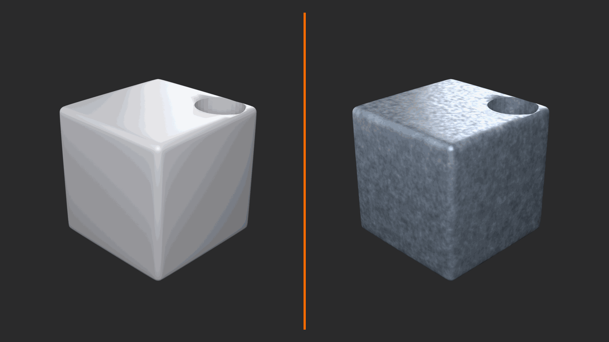
What Separates Amateur from Professional:
Amateur Materials:
- Single color/texture across entire surface
- Uniform roughness and metallic values
- No surface variation or imperfection
- Looks "too perfect" or "too clean"
- Doesn't respond realistically to lighting changes
- Result: Obviously CG, doesn't hold up to scrutiny
Professional Materials:
- Subtle color variation across surface
- Roughness variation (wear patterns, fingerprints)
- Detail at multiple scales (micro and macro)
- Imperfections (scratches, dirt, age)
- Physically accurate light response
- Result: Photorealistic, believable under any lighting
Real-World Example:
Look at a painted metal surface in real life. It's not uniform gray. There's color variation from oxidation. Roughness varies—worn smooth where hands touch, original texture elsewhere. Edges show metal underneath paint. Crevices accumulate dirt. Professional shaders capture this complexity!
The Advanced Shader Toolkit
✅ What You'll Master
1. Procedural Textures (No Images Required)
- Create complex patterns algorithmically
- Infinite resolution (zoom in forever, still detailed)
- Fully adjustable parameters
- No UV unwrapping needed (for some techniques)
- Use cases: Wood grain, noise, marble, patterns
2. Layered Materials (Mix and Mask)
- Combine multiple material types
- Use masks to control where each appears
- Create worn/weathered effects
- Dirt, rust, wear in appropriate places
- Example: Painted metal with rust showing through
3. Advanced PBR Workflows
- Proper use of IOR (Index of Refraction)
- Anisotropic reflections (brushed metal)
- Clearcoat for car paint and similar
- Subsurface scattering for translucent materials
- Sheen for fabrics
4. Texture Coordinate Mastery
- UV mapping alternatives (Generated, Object, etc.)
- Triplanar mapping (no stretching!)
- Box mapping for architectural surfaces
- Coordinate manipulation for effects
5. Node Groups and Reusability
- Build modular shader components
- Create material libraries
- Share across projects
- Consistent look development
Single Color] --> B[Add Texture] B --> C[Add Roughness
Variation] C --> D[Layer Multiple
Materials] D --> E[Add Procedural
Detail] E --> F[Fine-tune PBR
Parameters] F --> G[Professional
Photorealistic Result] style A fill:#999,stroke:#333,stroke-width:2px,color:#fff style G fill:#4CAF50,stroke:#333,stroke-width:2px,color:#fff
Prerequisites Check
📋 What You Should Know
Required Knowledge (from earlier lessons):
- Shader Editor basics: Adding nodes, making connections
- PBR fundamentals: Base Color, Roughness, Metallic, Normal
- Principled BSDF: Core material node and its parameters
- UV unwrapping: At least basic understanding
- Render engines: Difference between Eevee and Cycles
If rusty on these topics, quickly review:
- Lesson 10: Shader Editor Introduction
- Lesson 11: PBR Materials Explained
Ready? Let's dive into advanced techniques!
💭 The Material Artist's Philosophy: Great materials are rarely made in five minutes. They're built layer by layer, detail by detail. Professional material artists spend hours perfecting a single shader, adjusting subtle variations, testing under different lighting. This lesson teaches you that process. Don't rush—embrace the craft. When your wood looks so real you want to touch it, when your metal shows convincing wear, when viewers can't tell render from photo—that's when you've achieved mastery!
🎯 Ready for Master-Level Materials?
This lesson is dense, detailed, and powerful. By the end, you'll have techniques that take years to discover on your own. We'll build four complete professional materials from scratch, learning dozens of techniques along the way. Take your time, experiment at each stage, and prepare to level up your material game significantly. Let's create some beautiful surfaces!
🎨 Procedural Texture Mastery
Here's where shaders get magical. Procedural textures are mathematically-generated patterns—no image files required! Think about that for a moment: you can create infinitely-detailed wood grain, marble veins, noise patterns, and complex textures without ever loading a JPG. The patterns are calculated in real-time based on mathematical formulas. Zoom in as close as you want—the detail never pixelates because it's recalculated at every scale. This is computational artistry at its finest!
Blender includes dozens of procedural texture nodes, each generating different patterns. Some simulate natural phenomena (clouds, marble, wood), others create abstract patterns (voronoi, waves, gradients). The real power comes from combining these textures, layering them, and using them to control different aspects of your material. Let's master the essential procedural textures and how to wield them like a professional!
Understanding Procedural Texture Nodes
💡 The Procedural Texture Family
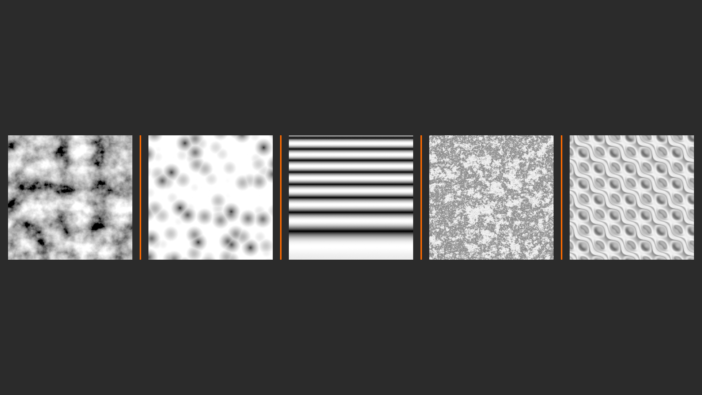
Essential Procedural Textures (Your Core Toolkit):
1. Noise Texture (The Workhorse)
- What it creates: Random, organic variation
- Best for: Roughness variation, dirt maps, imperfections
- Key settings: Scale (size of noise), Detail (complexity), Roughness (smoothness)
- Pro tip: Use everywhere! Real surfaces aren't uniform
- Dimensions: 1D, 2D, 3D, 4D (3D is most common)
2. Voronoi Texture (Cellular Patterns)
- What it creates: Cell-like patterns, organic divisions
- Best for: Stone, scales, reptile skin, cracked surfaces
- Key settings: Scale, Distance metric (F1, F2, smooth F1)
- Multiple outputs: Distance, Color, Position (very powerful!)
- Pro tip: Change Distance to "Smooth F1" for organic looks
3. Wave Texture (Rhythmic Patterns)
- What it creates: Bands, stripes, sine wave patterns
- Best for: Wood grain, fabric weave, rings
- Wave types: Bands, Rings, Saw, Sine, Triangle
- Key settings: Scale, Distortion, Detail
- Pro tip: Use Rings + distortion for tree growth rings
4. Musgrave Texture (Fractal Terrain)
- What it creates: Multi-scale fractal patterns
- Best for: Rocky surfaces, mountains, rough stone
- Types: fBm, Multifractal, Ridged Multifractal, Hybrid, Hetero Terrain
- Pro tip: Ridged Multifractal = mountain ranges!
5. Magic Texture (Abstract Patterns)
- What it creates: Psychedelic, abstract patterns
- Best for: Stylized materials, energy effects, sci-fi
- Depth parameter: Controls complexity (0-10)
- Pro tip: Great for adding subtle variation to colors
Texture Node] --> B[3D Position
Input] B --> C[Mathematical
Algorithm] C --> D[Generated
Pattern] D --> E[Color Output] D --> F[Value Output] E --> G[Base Color] F --> H[Roughness] F --> I[Normal Map] F --> J[Mask/Mix Factor] style A fill:#3a3a3a,stroke:#333,stroke-width:2px,color:#fff style C fill:#2196F3,stroke:#333,stroke-width:2px,color:#fff
Scale Parameter: The Foundation
Every procedural texture has a Scale parameter. This is crucial! Scale determines how "big" or "small" the pattern appears on your object. Think of it like zooming in or out on the pattern. Lower scale = larger pattern features. Higher scale = smaller, more detailed pattern. For realistic materials, you'll often use multiple textures at different scales—large-scale features plus fine details.
📏 Understanding Scale Values
| Scale Value | Pattern Size | Best For | Visual Result |
|---|---|---|---|
| 0.5 - 2 | Very large features | Overall color variation, large wood planks | Big, obvious patterns |
| 3 - 10 | Medium features | Primary texture detail, stone chunks | Balanced, visible pattern |
| 15 - 50 | Fine details | Surface imperfections, pores, grain | Subtle texture detail |
| 100+ | Micro details | Microscopic variation, noise | Almost imperceptible variation |
Professional Technique: Layer multiple textures at different scales! Use large-scale patterns for overall variation, medium-scale for primary features, and fine-scale for surface detail. This multi-scale approach is what makes materials look real!
🎯 Real-World Analogy: Think about a wooden table. At arm's length, you see the wood grain pattern (medium scale). Look closer, you see the fine wood pores and subtle grain texture (fine scale). Step back, you notice one end is slightly darker from sun exposure (large scale). Real surfaces have detail at multiple scales. Your materials should too!
Noise Texture: The Material Artist's Best Friend
If you master only one procedural texture, make it Noise. Seriously! Noise Texture is used in probably 90% of professional materials. Why? Because nothing in reality is perfectly uniform. Every surface has subtle variation—dirt, wear, manufacturing inconsistencies, age. Noise Texture creates this variation. You'll use it to add subtle roughness changes, color variation, mask edges, create imperfections... everywhere!
✅ Noise Texture Deep Dive
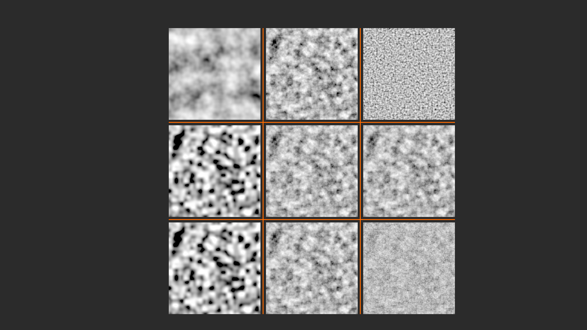
Key Parameters:
1. Scale (Frequency)
- Controls pattern size/frequency
- Higher = smaller, more detailed noise
- Lower = larger, blob-like noise
- Typical range: 5-50 for surface detail
2. Detail (Octaves)
- Adds layers of progressively finer noise
- Higher = more complex, natural-looking
- Range: 0-15 (higher = slower rendering)
- Sweet spot: 2-6 for most materials
- 0 = smooth, blobby; 15 = extremely detailed
3. Roughness (Pattern Sharpness)
- Controls how smooth vs. sharp the pattern is
- 0.0 = very sharp, defined patterns
- 1.0 = very smooth, flowing patterns
- Lower values: Sharper, more distinct features
- Higher values: Softer, cloudier patterns
4. Distortion
- Warps the noise pattern
- Creates more organic, irregular patterns
- 0 = regular noise pattern
- Higher values = more warped/twisted
- Use case: Making patterns less uniform
⚠️ Performance Note: Detail Parameter
Higher Detail values create more realistic patterns but slow down rendering significantly! Each additional detail level doubles the calculation time. For iterating and testing, keep Detail at 2-3. Bump it up to 5-8 for final renders. Don't use 15 unless you really need it—the difference above 10 is minimal but the render time penalty is huge!
Practical Noise Texture Applications
🛠️ Common Uses for Noise Texture
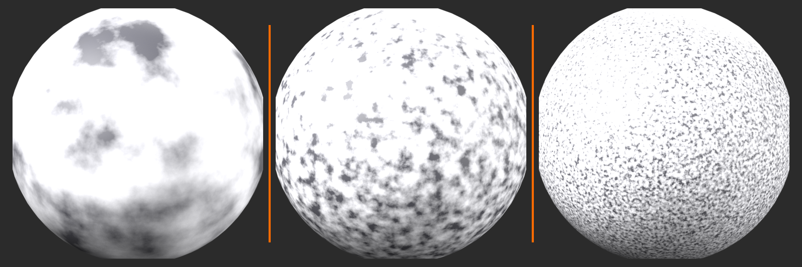
1. Roughness Variation (Most Common!)
- Setup: Noise Texture → Mix Node → Roughness input
- Effect: Some areas shinier, some more matte
- Settings: Scale 20-40, Detail 3-5, subtle strength (0.1-0.3 variation)
- Why it works: Real surfaces wear unevenly
2. Color Variation
- Setup: Noise Texture → ColorRamp → Mix with base color
- Effect: Subtle color differences across surface
- Settings: Large scale (5-15), low strength (0.05-0.15)
- Use case: Natural materials (wood, stone, skin)
3. Dirt/Wear Masks
- Setup: Noise Texture → ColorRamp (tight range) → Mix Factor
- Effect: Dirt appears in random areas
- Settings: Medium scale (8-20), adjust ColorRamp for coverage
- Combine with: Ambient Occlusion for crevice dirt
4. Bump/Normal Details
- Setup: Noise Texture → Bump node → Normal input
- Effect: Micro-surface detail and imperfections
- Settings: High scale (50-200), very low strength (0.05-0.2)
- Layer multiple: Different scales for realistic complexity
5. Displacement
- Setup: Noise Texture → Displacement node (Cycles)
- Effect: Actual geometry deformation
- Settings: Depends on desired effect; needs subdivided mesh
- Warning: Expensive! Use Bump for most cases
Voronoi Texture: Organic Cellular Patterns
Voronoi creates patterns based on distance to random points—imagine scattering seeds on a surface and measuring distance from each point. The result? Beautiful cellular patterns perfect for stone, scales, cracked surfaces, and organic textures. Voronoi is incredibly versatile because it outputs multiple values: Distance (how far from nearest point), Color (which cell), and Position (point coordinates). Each output can drive different aspects of your material!
💡 Voronoi Texture Mastery
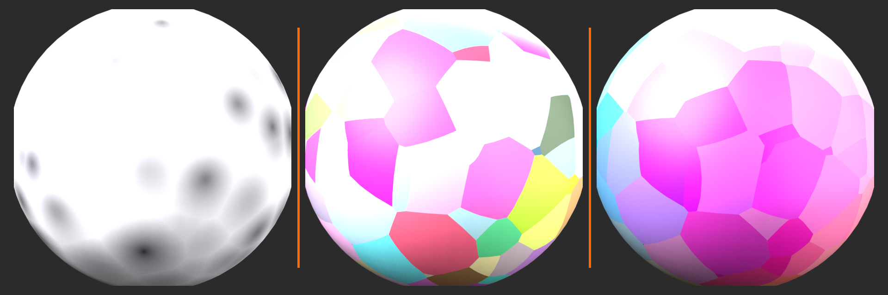
Feature Outputs (This is Important!):
Distance Output:
- Measures distance to nearest point
- Creates gradient from cell centers
- Use for: Cell-like patterns, organic borders
- Pro tip: Connect to ColorRamp to control falloff
Color Output:
- Each cell gets a random color
- Sharp boundaries between cells
- Use for: Random color variation, tile patterns
- Combine with: Hue/Saturation/Value node for control
Position Output:
- Coordinates of nearest point
- Same value throughout each cell
- Use for: Per-cell variations, advanced effects
- Advanced technique: Drive other textures with this!
🎛️ Distance Metrics (Change the Look!)
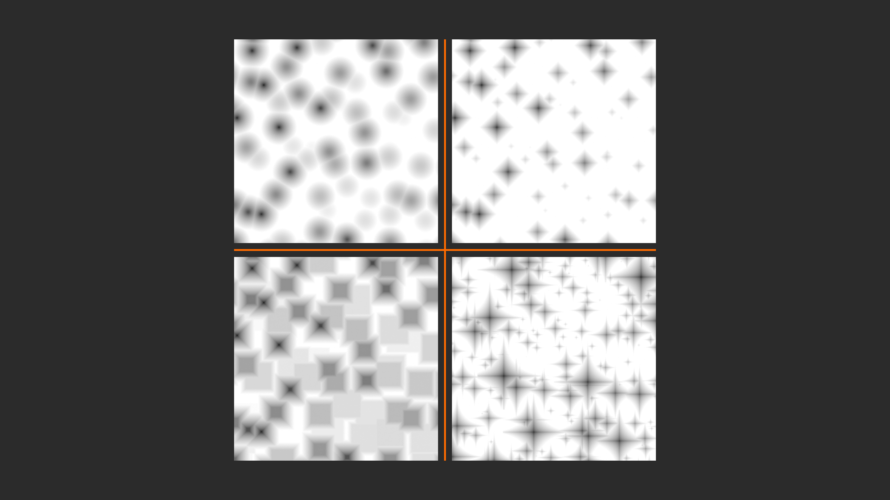
| Metric Type | Pattern Style | Best For | Visual Character |
|---|---|---|---|
| Euclidean | Round, natural cells | Organic surfaces, bubbles | Circular, smooth boundaries |
| Manhattan | Square, grid-like | Tiles, bricks, geometric | Straight edges, right angles |
| Chebychev | Square cells | Crystals, rigid structures | Sharp corners, defined edges |
| Minkowski | Adjustable blend | Custom looks, experimentation | Variable (0.5-4.0 exponent) |
Pro Tips:
- F1: Distance to nearest point (standard cells)
- F2: Distance to second-nearest (cell borders!)
- Smooth F1: Blended cells (organic, natural)
- Distance to Edge: Isolates cell boundaries
- N-Sphere Radius: Cell sizes (advanced)
🔧 Practical Example: Creating stone texture? Use Voronoi with "Smooth F1" metric. Connect Color output to Base Color (through ColorRamp for stone colors). Connect Distance to Bump (subtle height variation). Instant stone pattern! Change Scale to adjust stone chunk size. Add a Noise texture to roughness for surface variation. That's professional stone texture in 30 seconds!
Wave Texture: Rhythmic and Repeating Patterns
Wave Texture creates regular, repeating patterns—bands, rings, saw-tooth waves. It's perfect for anything with a rhythm: wood grain (rings!), fabric weave, stripes, or any surface with directional patterns. The magic happens when you add distortion—pure waves look too perfect and computer-generated. Add some noise-based distortion and suddenly those rings look like natural tree growth rings!
✅ Wave Types and Their Uses
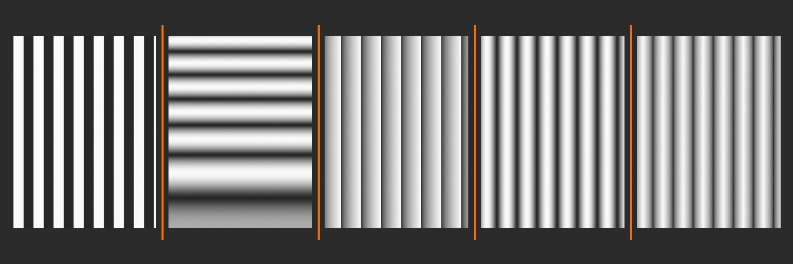
Bands (Default)
- Straight parallel lines
- Direction controlled by texture coordinates
- Use for: Striped patterns, directional grain
- Add distortion: Makes it wavy, natural
Rings (Star Power!)
- Concentric circles from center point
- Perfect for wood, tree rings, radial patterns
- Scale: Controls ring spacing
- Must-use setting: Add Distortion for realistic wood!
- Pro tip: Drive with Noise Texture for irregular rings
Saw (Sharp Transitions)
- Sawtooth wave pattern
- Linear ramp that repeats
- Use for: Stylized effects, sharp color bands
Sine (Smooth Waves)
- Smooth, flowing transitions
- Classic sine wave pattern
- Use for: Gentle undulations, organic flow
Triangle
- Linear ramp up and down
- More regular than sine
- Use for: Geometric patterns
⚠️ Wood Grain Secret!
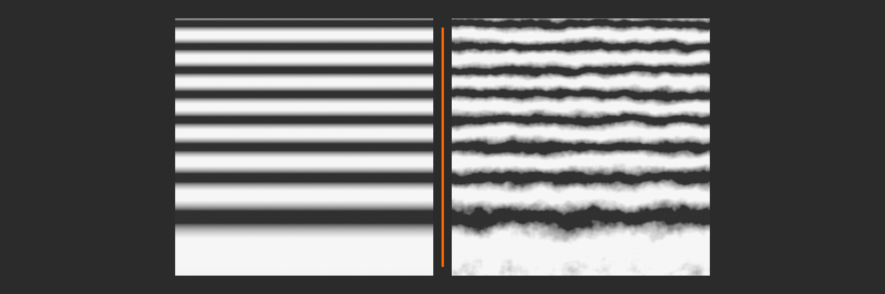
The Professional Wood Workflow:
- Wave Texture (Rings) as base pattern
- Add Distortion (1.0-3.0) for irregular growth
- Multiply scale by Noise Texture for varying ring spacing
- Use ColorRamp to create light/dark wood bands
- Add another Noise at high scale for grain texture
- Layer with Bump for surface detail
This six-step pattern creates convincing wood every time! We'll build this exact setup in our wood project later. The key is the distortion—without it, you get concentric circles. With it, you get natural wood growth patterns!
Musgrave Texture: Fractal Detail
Musgrave generates fractal patterns—mathematical patterns that repeat at different scales. It's based on real terrain generation algorithms. Use it for rough, chaotic surfaces: stone, rocky ground, mountains, rough metal. The different Musgrave types create different styles of roughness. It's more specialized than Noise or Voronoi, but perfect when you need that rocky, uneven, natural chaos!
🏔️ Musgrave Types Explained
fBm (Fractal Brownian Motion):
- Most versatile, general-purpose fractal noise
- Balanced detail at multiple scales
- Use for: General rough surfaces, clouds, general terrain
Multifractal:
- More extreme, pronounced features
- Higher contrast than fBm
- Use for: Craggy rocks, emphasized texture
Ridged Multifractal (The Mountain Maker!):
- Creates sharp ridges and valleys
- Inverted peaks become mountain ranges
- Use for: Rocky surfaces, mountains, sharp stone edges
- Most popular for: Stone and rock materials!
Hybrid Multifractal:
- Mix of fBm and Ridged characteristics
- Smoother than Ridged, more detail than fBm
- Use for: Natural variation, when Ridged is too harsh
Hetero Terrain:
- Heterogeneous (varying) terrain patterns
- Some areas smooth, some rough
- Use for: Varied surfaces, realistic terrain
Key Parameters:
- Dimension: Controls roughness (lower = rougher, 0-1)
- Lacunarity: Detail frequency (2.0 = standard, higher = more detail variation)
- Detail: Number of octaves (more = more detail, slower render)
Combining Procedural Textures
Here's where you transcend from beginner to artist: layer your textures! Professional materials almost never use a single texture. They combine multiple procedural textures at different scales, each controlling different aspects of the material. Large-scale Noise for color variation. Medium-scale Voronoi for main pattern. High-scale Noise for micro-detail. Wave texture for directional grain. Musgrave for bump detail. Each layer adds realism!
🎨 Multi-Scale Layering Technique
Professional Workflow:
- Layer 1 - Large Scale (Color Foundation)
- Scale: 1-5
- Purpose: Overall color variation
- Example: Subtle brightness changes across surface
- Layer 2 - Medium Scale (Primary Pattern)
- Scale: 5-20
- Purpose: Main visible texture pattern
- Example: Wood grain, stone chunks, main features
- Layer 3 - Fine Scale (Surface Detail)
- Scale: 50-200
- Purpose: Micro-surface imperfections
- Example: Pores, scratches, fine grain
- Layer 4 - Roughness Variation
- Scale: 15-50
- Purpose: Non-uniform shine
- Example: Worn areas, fingerprints, wear patterns
The Secret: Each layer subtle on its own, but combined they create complex, believable surfaces. No single texture does everything—it's the combination that achieves photorealism!
Color Variation] B --> C[Add Medium Scale
Pattern/Texture] C --> D[Add Fine Scale
Detail] D --> E[Add Roughness
Variation] E --> F[Add Bump/Normal
Detail] F --> G[Professional
Multi-Layer Material] style A fill:#999,stroke:#333,stroke-width:2px,color:#fff style G fill:#4CAF50,stroke:#333,stroke-width:2px,color:#fff
ColorRamp: The Procedural Texture Controller
You'll almost always use a ColorRamp node after procedural textures. Why? Procedural textures output values, but you need to control what those values mean! ColorRamp lets you remap the texture's output range, control contrast, create sharp transitions or smooth gradients, and convert grayscale patterns to colors. It's the bridge between "here's some noise" and "here's how that noise controls my material." Master ColorRamp and you master procedural texturing!
✅ ColorRamp Essential Techniques
1. Controlling Range (Clipping Values)
- Move color stops to narrow the active range
- Black stop at 0.4, white at 0.6: Only middle values pass through
- Use case: Creating masks from noise (dirt only in certain areas)
2. Increasing Contrast
- Move stops closer together
- Creates sharper transitions
- Extreme: Stops very close = almost binary (black or white)
- Use case: Sharp material boundaries, clear separation
3. Softening/Smoothing
- Spread stops far apart
- Creates gentle gradients
- Use case: Subtle variation, smooth transitions
4. Color Mapping
- Add multiple color stops
- Convert grayscale noise to color gradient
- Example: Noise → ColorRamp (brown to tan to light brown) = wood color variation
5. Inverting
- Swap black and white stop positions
- Quick way to reverse a texture's effect
- Alternative: Use Invert node, but ColorRamp is faster to adjust
🎛️ ColorRamp Interpolation Modes
| Mode | Transition Type | Best For |
|---|---|---|
| Linear | Straight gradients | Most common, general use |
| Ease | Smooth acceleration/deceleration | Natural-looking gradients |
| Constant | No gradient, hard steps | Sharp color bands, no blend |
| B-Spline | Very smooth curves | Organic color transitions |
💭 Pro Insight: A common workflow is: Procedural Texture → ColorRamp (to control range/contrast) → Mix Node (to blend with other elements). The ColorRamp acts as a "control panel" for the texture. Need more contrast? Adjust ColorRamp. Need to limit where effect appears? Adjust ColorRamp. Want different colors? Adjust ColorRamp. It's your Swiss Army knife for procedural control!
Practical Exercise: Your First Procedural Material
🎯 Try It Now: Simple Procedural Stone
Let's build a basic stone material using only procedural textures!
Setup (5 minutes):
- Create a new material, open Shader Editor
- Add a UV Sphere to see your material
- Switch to Rendered view (Z → Rendered)
- Add an HDRI or three-point lighting for proper preview
Build the Material:
- Base Color Pattern:
- Add Noise Texture (Shift+A → Texture → Noise)
- Set Scale to 5, Detail to 4
- Add ColorRamp after it
- In ColorRamp: Set left color to dark gray (RGB 0.2, 0.2, 0.2)
- Set right color to light gray (RGB 0.5, 0.5, 0.5)
- Connect ColorRamp Color → Principled BSDF Base Color
- Result: Subtle color variation!
- Add Roughness Variation:
- Add another Noise Texture
- Set Scale to 25 (finer detail)
- Add ColorRamp, adjust so middle gray is around 0.7
- Connect to Roughness input
- Result: Some areas shinier than others!
- Add Surface Bump:
- Add a third Noise Texture
- Set Scale to 50 (very fine detail)
- Add Bump node (Shift+A → Vector → Bump)
- Connect Noise Color → Bump Height
- Set Bump Strength to 0.1 (subtle!)
- Connect Bump Normal → Principled BSDF Normal
- Result: Visible surface texture!
Congratulations! You just created a procedural stone material with color variation, roughness variation, and surface detail—all without a single image texture! Try adjusting the Scale values and ColorRamp positions to see how it changes. This is the foundation of procedural texturing!
🎓 Section Complete: Procedural Textures
You now understand the essential procedural texture nodes, how to control them with Scale and ColorRamp, and how to layer them for complex effects. These techniques form the backbone of professional material creation. In the next section, we'll explore texture coordinate systems—the "where" to procedural textures' "what." Understanding coordinates unlocks even more powerful possibilities!
🧭 Texture Coordinate Systems
Time to answer a crucial question: when Blender generates procedural patterns or applies image textures, how does it know where to put what? That's where texture coordinates come in! Coordinates are the "addressing system" for textures—they tell Blender "this point on the surface corresponds to this point in the texture." Understanding texture coordinates is like understanding how GPS works. Once you get it, you can control texture placement with precision and create effects impossible with basic UV mapping alone!
Most beginners only use UV coordinates—the 2D unwrapped version of their 3D model. But Blender offers multiple coordinate systems, each with different properties and use cases. Generated coordinates, Object coordinates, World coordinates, even Camera coordinates—each tells textures to behave differently. Master these and you unlock procedural mapping, seamless texturing, triplanar projection, and more professional techniques that separate novice work from studio-quality materials!
The Texture Coordinate Node
💡 Understanding Coordinate Systems
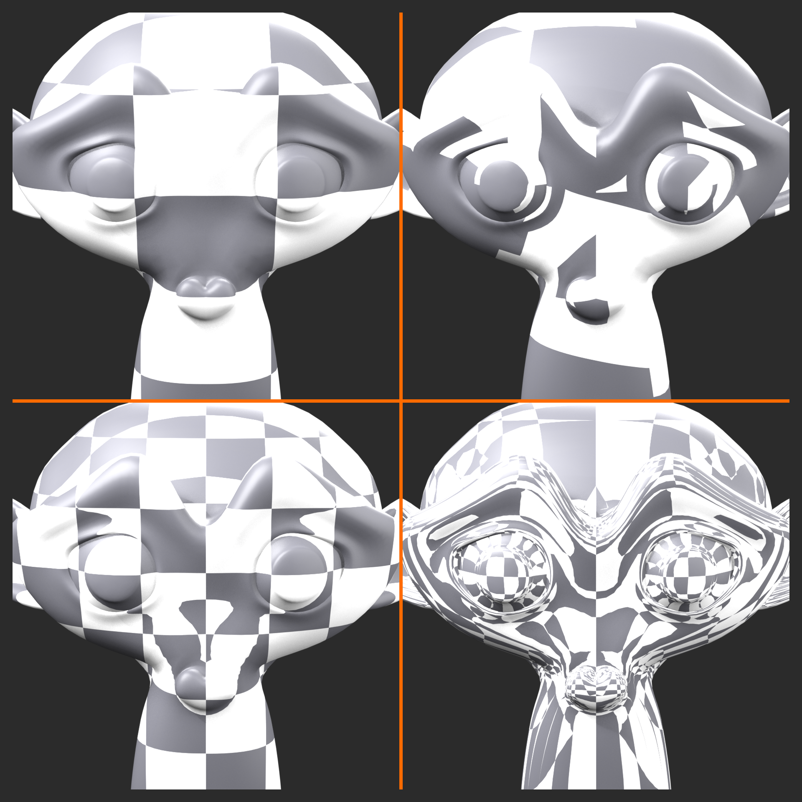
The Texture Coordinate node (Shift+A → Input → Texture Coordinate) provides seven different coordinate systems:
1. Generated (Most Common for Procedural!)
- What it is: Automatic coordinates based on object bounding box
- Range: 0 to 1 across each axis of bounding box
- Advantage: No UV unwrapping needed!
- Disadvantage: Changes if you modify object shape
- Perfect for: Simple objects, procedural textures, primitives
- Use case: Quick procedural materials without UV work
2. UV (The Standard)
- What it is: Your custom 2D unwrapping
- Range: 0 to 1 in U and V dimensions
- Advantage: Full control over texture placement
- Disadvantage: Requires unwrapping work
- Perfect for: Image textures, detailed models, characters
- Use case: When you need precise control
3. Object
- What it is: Based on object's local coordinate system
- Range: Uses object's actual dimensions
- Advantage: Stays consistent if you scale/rotate in Edit mode
- Disadvantage: Affected by object-mode transforms
- Perfect for: Patterns that should stay fixed to object
- Use case: Wood grain direction, anisotropic reflections
4. Camera
- What it is: Based on camera view
- Range: Changes with camera movement
- Advantage: Creates screen-space effects
- Use case: Special effects, projection mapping, screen-aligned textures
5. Window (Screen Space)
- What it is: Based on viewport/render window position
- Use case: Compositing tricks, screen-space effects
- Rare in typical materials
6. Normal
- What it is: Based on surface normal direction
- Range: -1 to 1 converted to 0 to 1 for each XYZ axis
- Use case: Facing-dependent effects, rim lighting
- Advanced technique: Different materials based on surface angle
7. Reflection
- What it is: Based on reflection vector
- Use case: Environment mapping, reflection maps
- Typically used with: Spherical or HDRI environments
Node] --> B[Generated] A --> C[UV] A --> D[Object] A --> E[Camera] A --> F[Window] A --> G[Normal] A --> H[Reflection] B --> I[Procedural Textures] C --> J[Image Textures] D --> K[Directional Patterns] G --> L[Angle-Based Effects] style A fill:#3a3a3a,stroke:#333,stroke-width:2px,color:#fff style B fill:#4CAF50,stroke:#333,stroke-width:2px,color:#fff style C fill:#4CAF50,stroke:#333,stroke-width:2px,color:#fff
Generated vs UV: When to Use Each
The eternal question! Generated coordinates are fantastic for procedural work—they're automatic and require zero setup. UV coordinates give you precise control but require unwrapping. Here's how to choose:
⚖️ Generated vs UV Comparison
| Aspect | Generated Coordinates | UV Coordinates |
|---|---|---|
| Setup Required | None! Automatic | Must UV unwrap |
| Control | Limited, automatic | Complete manual control |
| Stretching | Can have stretching on complex shapes | Control stretching via unwrap |
| Best For | Procedural textures, simple shapes | Image textures, complex models |
| Modifications | Changes if mesh shape changes | Stays consistent (pinned to UVs) |
| Speed | Instant, no prep | Time investment to unwrap |
| Professional Use | Quick tests, procedural materials | Final production, detailed work |
The Professional Approach:
- Early stages: Use Generated for quick procedural testing
- Simple objects: Generated works great (spheres, cubes, simple shapes)
- Complex models: Invest time in proper UV unwrapping
- Image textures: Always use UV coordinates
- Hybrid approach: UV for color/detail, Generated for procedural variation
🎯 Real-World Strategy: Professional studios often use both! UV coordinates for hero image textures (albedo, normal maps from photos or substance painter). Generated/Object coordinates for procedural overlay layers (dirt, wear, variation). This hybrid approach combines the precision of UV mapping with the flexibility of procedural generation. Best of both worlds!
The Mapping Node: Coordinate Transformation
The Mapping node is your coordinate manipulation tool! Think of it as Photoshop transform tools for 3D texture space. You can move, rotate, and scale texture coordinates, which effectively moves, rotates, and scales your textures. This is incredibly powerful—it means you can adjust texture placement without touching your mesh or UVs. Need the wood grain rotated 45 degrees? Mapping node. Want the brick pattern twice as big? Mapping node. It's essential for fine-tuning texture appearance!
✅ Mapping Node Controls
Location (Texture Offset):
- Moves texture in X, Y, Z directions
- Positive values shift texture that direction
- Use case: Reposition texture without moving UVs
- Example: Shift wood grain to different area of plank
Rotation (Texture Orientation):
- Rotates texture around X, Y, Z axes
- Values in radians (90° = 1.5708 radians)
- Use case: Change texture direction/orientation
- Example: Rotate wood grain to match board direction
- Pro tip: For Z-axis rotation, use degrees mentally (45° ≈ 0.785)
Scale (Texture Size):
- Makes texture bigger (values < 1) or smaller (values > 1)
- Independent control per axis
- Use case: Resize patterns without changing Scale node
- Example: Make brick pattern half as big (Scale = 2, 2, 2)
- Inverse relationship: Scale 2 = half-size pattern (shows twice as many repeats)
⚠️ Mapping Node Workflow Tip
Standard Setup: Texture Coordinate → Mapping → Texture Node
Always insert a Mapping node between your coordinate source and texture! Even if you don't need it now, you'll probably need adjustment later. It's like leaving yourself a control panel for future tweaks. Studio materials almost always have this three-node setup as standard practice!
Pro Workflow:
- Add Texture Coordinate node
- Add Mapping node
- Connect coordinate type (Generated/UV/Object) to Mapping Vector
- Connect Mapping Vector to Texture
- Now you can adjust without rewiring!
Rotation
Scale] D --> E[Texture Node] E --> F[Material Output] style C fill:#4CAF50,stroke:#333,stroke-width:2px,color:#fff
Triplanar Mapping: The Stretching Solution
Here's a common problem: you have a complex object, and when you use Generated coordinates, you get ugly stretching. The texture looks fine on some faces but stretched and distorted on others. UV unwrapping would fix it, but that's time-consuming. Enter triplanar mapping—a technique that projects textures from three perpendicular directions (X, Y, Z) and blends them based on surface normals. Result? No stretching, no unwrapping needed! It's computational UV mapping!
💡 How Triplanar Mapping Works
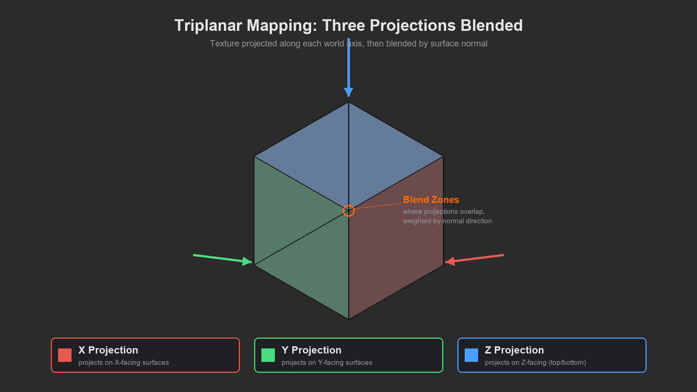
The Concept:
- Project texture from X direction onto X-facing surfaces
- Project texture from Y direction onto Y-facing surfaces
- Project texture from Z direction onto Z-facing surfaces
- Blend the three projections based on surface normal
- Result: Each face gets texture from its best-aligned direction
Why It's Powerful:
- Works on any geometry without UV unwrapping
- No texture stretching on complex shapes
- Perfect for architectural surfaces (walls, floors, ceilings)
- Great for organic shapes that are hard to unwrap
- Tradeoff: More complex node setup, three texture samples
When to Use Triplanar:
- Architectural visualization (box-shaped rooms)
- Terrain and landscapes
- Quick procedural texturing of complex shapes
- When unwrapping is impractical
- Procedural materials that need to work on any object
🔧 Building Triplanar Mapping (Manual Method)
Node Setup (This gets technical!):
- Get Coordinates:
- Add Texture Coordinate node
- Use Generated or Object output
- Separate Axes:
- Add Separate XYZ node
- Connect coordinates to it
- This separates X, Y, Z into individual values
- Create Three Projections:
- Create three Combine XYZ nodes
- XY plane: Connect X and Y, leave Z at 0
- XZ plane: Connect X and Z, leave Y at 0
- YZ plane: Connect Y and Z, leave X at 0
- Sample Texture Three Times:
- Add three copies of your texture node
- Connect each combined coordinate to one texture copy
- Get Surface Normals:
- Add Geometry node (Input → Geometry)
- Use Normal output
- Add Separate XYZ to split normal components
- Create Blend Weights:
- Add Math nodes set to Absolute for each normal component
- This makes all normal values positive
- These become blend weights
- Mix the Three Projections:
- Use Mix nodes with blend weights from normals
- Blend XY projection with XZ projection using appropriate weight
- Blend result with YZ projection
Honest Assessment: This is complex! It's 15+ nodes. For production work, use a node group or download a triplanar shader group from online. But understanding the concept matters—you're sampling texture from three directions and blending based on which direction each face points!
⚠️ Practical Triplanar Advice
Don't build it from scratch every time! Triplanar mapping is a solved problem. Create it once, save as a node group, reuse forever. Or download pre-made triplanar node groups from Blender community. Many professional add-ons include triplanar mapping as a one-click feature. Understanding the concept is valuable; rebuilding it manually each time is not efficient!
Alternative: For simple cases, use Object coordinates with multiple objects or UV Project modifier. For architectural work, many studios use specialized texturing tools. Triplanar is powerful but not always necessary!
Object Coordinates for Directional Patterns
Object coordinates deserve special attention because they're perfect for directional effects like wood grain or brushed metal. Unlike Generated coordinates that fit to the bounding box, Object coordinates use the actual object's local coordinate system. This means you can control pattern direction by rotating the object in Edit mode, and the pattern stays consistent when you scale or rotate in Object mode. This stability makes Object coordinates ideal for materials where direction matters!
✅ Object Coordinates Use Cases
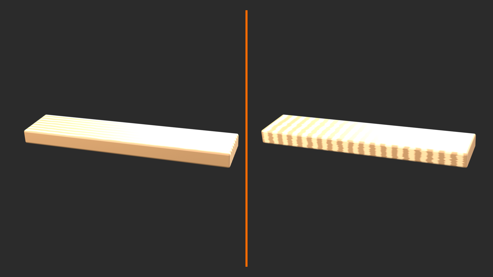
1. Wood Grain Direction
- Use Object coordinates with Wave Texture (Bands)
- Bands follow object's local Y-axis by default
- Rotate object in Edit mode to align grain with plank length
- Apply rotation (Ctrl+A) to lock it in
- Result: Wood grain follows board direction perfectly!
2. Brushed Metal (Anisotropic Reflections)
- Use Object coordinates to define brush direction
- Connect to Anisotropic Rotation in Principled BSDF
- Set Anisotropic value > 0 to activate
- Result: Reflections streak in one direction like real brushed metal
3. Fabric Weave
- Object coordinates maintain weave direction
- Use with Wave or Checker textures
- Stays consistent across clothing pieces
4. Pattern Alignment Across Multiple Objects
- Multiple objects with same material
- Using Object coordinates aligns patterns to each object's orientation
- Perfect for instanced objects (floorboards, tiles)
🔧 Pro Technique: When creating wood materials, always use Object coordinates for the grain direction (Wave Texture for rings/grain). Then use Generated coordinates for color variation (Noise). Mix them! Object gives you directional control, Generated gives you natural variation. This combination is the industry-standard approach for believable wood!
Normal Coordinates: Angle-Based Effects
Normal coordinates are wonderfully weird and powerful! They don't map texture to surface location—they map based on surface direction. Each point gets coordinates based on which way the surface is facing. Why is this useful? Because you can create effects that change based on surface angle. Want different materials on horizontal vs. vertical surfaces? Want edges to show wear? Want rim lighting effects? Normal coordinates make it possible!
💡 Normal Coordinate Applications
1. Angle-Based Material Mixing
- Mix different materials based on surface angle
- Example: Snow accumulates on horizontal surfaces, not vertical
- Setup: Normal Z-component → ColorRamp → Mix Factor
- Result: Automatic snow on tops, rock on sides!
2. Edge Wear (Worn Edges)
- Combine Normal with Pointiness attribute
- Creates wear on edges that face outward
- Ultra-realistic: Edges wear more than recesses
3. Fresnel-Like Effects
- Different appearance at grazing vs. direct angles
- Use with Layer Weight node for true Fresnel
- Natural phenomenon: Water more reflective at shallow angles
4. Procedural Ambient Occlusion
- Darken crevices and inward-facing surfaces
- Combine Normal with AO output from Geometry node
- Cheap AO: Faster than true AO calculation
🎯 Practical Example: Snow on Landscape
Creating Auto-Snow Shader (Based on Surface Angle):
- Setup Base Materials:
- Create rock/ground material (dark, rough)
- Create snow material (white, slight subsurface)
- Add Normal-Based Mask:
- Add Texture Coordinate → Normal output
- Add Separate XYZ
- Take Z output (vertical component)
- Control Snow Threshold:
- Add ColorRamp after Z output
- Adjust gradient to control snow angle
- Higher position = only very horizontal surfaces get snow
- Lower position = snow on more angled surfaces
- Mix Materials:
- Add Mix Shader node
- Connect rock to input 1, snow to input 2
- Connect ColorRamp to Factor
- Add Realism:
- Multiply mask with Noise for irregular snow coverage
- Add slight Bump to snow for texture
- Result: Realistic snow that automatically appears on upward-facing surfaces!
This same technique works for: Moss on stone (upward surfaces), rust/corrosion (downward surfaces where water pools), dust accumulation, weathering patterns. Any material distribution based on angle!
Coordinate Tricks and Advanced Techniques
✅ Pro Coordinate Techniques
1. Mixing Coordinate Systems
- Different textures can use different coordinates!
- Example: UV for detail, Generated for variation overlay
- Color map uses UV, dirt mask uses Generated
- Why: Combines precision with flexibility
2. Scaling Coordinates with Math
- Vector Math node → Multiply
- Multiply coordinates by value to scale texture
- Use case: Uniform scaling without Mapping node
- Great for animating texture scale
3. Distorting Coordinates
- Feed noise into Vector Math (Add/Multiply)
- Warps the coordinate space itself
- Result: Makes regular patterns irregular
- Example: Perfectly aligned bricks → slightly irregular placement
4. Empty Object Coordinates
- Add Empty object in scene
- Use Object info node → Location
- Drive texture with Empty's position
- Power move: Animate Empty to move texture pattern!
5. Camera-Based Projection
- Use Camera coordinates for projection mapping
- Like a texture projector following camera
- Use case: Matching CG to photographed backgrounds
- Advanced: Camera projection for texturing from photos
Practical Exercise: Coordinate System Comparison
🎯 Try It Now: See Coordinate Differences
Let's see how different coordinates affect the same texture!
Setup (2 minutes):
- Create a Suzanne (Shift+A → Mesh → Monkey)
- Subdivide it once (Tab → A → Right-click → Subdivide)
- Add material, open Shader Editor
Test Each Coordinate:
- Add Nodes:
- Add Texture Coordinate node
- Add Checker Texture (easy to see distortion)
- Set Checker Scale to 5
- Connect to Base Color
- Try Generated:
- Connect Generated → Checker Vector
- Observe: Pattern fits bounding box, some stretching
- Try Object:
- Connect Object → Checker Vector
- Observe: Based on actual geometry size, different scale
- Try Normal:
- Connect Normal → Checker Vector
- Observe: Weird! Pattern based on surface direction, not position
- Try with Mapping:
- Insert Mapping node between coordinate and Checker
- Try rotating, scaling, moving
- See the control you get!
Key Observations:
- Generated: Automatic but can stretch on complex shapes
- Object: Size matches actual object dimensions
- Normal: Wild! Changes with angle, not position
- Mapping node: Instant control without changing mesh
🎓 Section Complete: Texture Coordinates
You now understand how Blender maps textures to surfaces! You know when to use Generated vs. UV, how to control placement with Mapping nodes, what triplanar mapping solves, and how to leverage Object and Normal coordinates for special effects. This knowledge unlocks precise control over texture appearance. Next up: layered materials—combining multiple materials with masks to create complex, realistic surfaces!
🎭 Layered Material Workflows
Now we're entering the realm where materials become truly photorealistic! Layered materials are the secret sauce behind every convincing surface you've ever seen in professional CG. Here's the truth: real-world surfaces aren't a single material. That painted metal table? It's paint, plus exposed metal where paint wore away, plus rust forming on that exposed metal, plus dirt accumulating in crevices, plus fingerprint oils on frequently touched areas. Five layers, each appearing in specific places based on logical rules. This is what separates "nice render" from "wait, is that a photograph?"
Layering materials in Blender means combining multiple shaders using masks to control where each appears. Think of it like Photoshop layers, but in 3D and based on surface properties rather than just image layers. You'll use procedural masks, texture masks, geometric information (pointiness, curvature), and clever mixing techniques to create surfaces with depth, history, and believability. This is where your understanding of procedural textures and coordinates pays off massively—everything comes together here!
Understanding Material Layers
💡 The Layering Philosophy
Think About Real Surfaces:
Example: An Old Painted Metal Chair
- Base Layer: Raw metal substrate (steel, aluminum)
- Paint Layer: Painted finish (green, blue, whatever)
- Wear Layer: Paint worn away on edges and contact points → metal showing through
- Oxidation Layer: Rust forming on exposed metal (especially at edges)
- Dirt Layer: Accumulated grime in crevices and less-touched areas
- Contamination Layer: Oils, fingerprints on frequently touched surfaces
Each Layer Has:
- Its own material properties: Different color, roughness, metallic values
- A mask controlling where it appears: Procedural or texture-based
- Logical placement rules: Wear on edges, dirt in crevices, etc.
- Interaction with other layers: Layers can affect each other
The Professional Approach:
Start with a clean base material. Add layers one at a time, each with clear logic. Edges wear first → add edge wear. Crevices collect dirt → add cavity dirt. Horizontal surfaces get dust → add dust layer. Build complexity gradually. The magic isn't one perfect material—it's multiple simple materials combined intelligently!
Clean Surface] --> B[+ Wear Layer
Edges Exposed] B --> C[+ Oxidation
Rust on Metal] C --> D[+ Dirt Layer
Crevice Grime] D --> E[+ Surface Contamination
Oils, Fingerprints] E --> F[Complex Realistic
Material] style A fill:#999,stroke:#333,stroke-width:2px,color:#fff style F fill:#4CAF50,stroke:#333,stroke-width:2px,color:#fff
Mix Shader vs Mix Color: Know the Difference!
Before we build layered materials, let's clarify a common confusion: Blender has Mix Shader nodes and Mix Color nodes (formerly MixRGB). They look similar but work very differently! Understanding when to use each is crucial for efficient, correct material setups.
✅ Mix Shader vs Mix Color
Mix Shader Node:
- What it mixes: Complete shaders (entire material definitions)
- Inputs: Two shader sockets (green connectors)
- Output: One combined shader
- Use when: Combining entirely different materials (metal AND paint)
- Example: 50% glossy shader + 50% diffuse shader = semi-glossy result
- Performance: Calculates both shaders, more expensive
Mix Color Node (Mix):
- What it mixes: Values or colors
- Inputs: Two color/value sockets (yellow or gray connectors)
- Output: One blended value/color
- Use when: Blending colors, roughness values, any parameter
- Example: Mix red and blue based on noise → varied color
- Performance: Lightweight, just blending values
When to Use Which:
| Scenario | Use This | Why |
|---|---|---|
| Blending two complete materials | Mix Shader | Each has different roughness, color, metallic, etc. |
| Varying base color across surface | Mix Color | Same material, just color changes |
| Roughness variation | Mix Color | Blending roughness values |
| Metal showing through paint | Mix Shader | Completely different materials |
| Dirt over clean surface | Mix Shader | Different material properties |
| Wood color variation | Mix Color | Same wood, just light/dark areas |
⚠️ Performance Tip: Mix Values, Not Shaders When Possible
Efficient approach: Use one Principled BSDF and mix its input values (colors, roughness) rather than multiple complete shaders when appropriate. Mix Shader calculates both materials fully, then blends results. Mixing values into one Principled BSDF is faster!
Example of efficient setup:
- Instead of: Clean material (Principled) → Mix Shader ← Dirty material (Principled)
- Do this: Clean color → Mix Color (dirt mask) ← Dirty color → Single Principled BSDF
- When both work, prefer value mixing!
But use Mix Shader when materials are truly different: Metal and non-metal must use Mix Shader because Metallic is binary in Principled BSDF. Reflective and diffuse surfaces need Mix Shader. Different IOR values need Mix Shader.
Creating Effective Masks
Masks are the heart of layered materials—they control where each layer appears. A mask is just a grayscale value (0-1) where white = layer fully visible, black = layer fully hidden, and gray = partial visibility. The art is creating masks that follow logical, real-world rules. Wear happens on edges. Dirt accumulates in crevices. Dust settles on horizontal surfaces. Your masks should reflect these natural patterns!
💡 Mask Creation Techniques
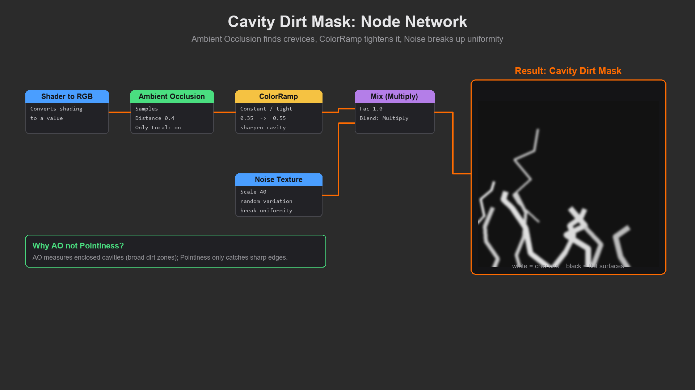
1. Procedural Noise Masks (Random Variation)
- Method: Noise Texture → ColorRamp → Mix Factor
- Creates: Random, organic-looking distribution
- Control: ColorRamp position controls coverage amount
- Best for: General dirt, wear patterns, imperfections
- Pro tip: Layer multiple noise scales for realistic complexity
2. Ambient Occlusion Masks (Crevice Detection)
- Method: Shader to RGB → Ambient Occlusion → ColorRamp
- Creates: Darkening in crevices, corners, where surfaces meet
- Best for: Dirt accumulation, aging, contact shadows
- Note: Cycles only! Eevee needs baked AO
- Performance: Expensive to calculate, but looks great
3. Pointiness/Curvature Masks (Edge Detection)
- Method: Geometry node → Pointiness output → ColorRamp
- Creates: White on convex areas (edges), black in concave
- Best for: Edge wear, highlights on corners, weathering
- Why it works: Edges wear first in reality!
- Adjust: ColorRamp position controls how sharp/broad the edge detection is
4. Facing/Normal-Based Masks (Angle Detection)
- Method: Layer Weight → Facing output / Texture Coordinate → Normal
- Creates: Masks based on surface angle relative to camera/world
- Best for: Dust on horizontal surfaces, wear on upward faces
- Example: Dust only on tops of objects, not undersides
5. Texture-Based Masks (Painted Control)
- Method: Image Texture (grayscale) → Mix Factor
- Creates: Precise manual control via painted/photo mask
- Best for: Hero assets, specific wear patterns, art-directed looks
- Workflow: Paint in Photoshop, Substance Painter, or Blender texture paint
6. UV-Based Masks (Coordinate Manipulation)
- Method: Gradient Texture with UV coordinates
- Creates: Gradual transitions, fades, directional effects
- Best for: Controlled gradients, directional wear
Control] C --> G D --> G E --> G F --> G G --> H[Mix Factor] H --> I[Layer Visibility] style A fill:#3a3a3a,stroke:#333,stroke-width:2px,color:#fff style G fill:#4CAF50,stroke:#333,stroke-width:2px,color:#fff
The Pointiness Attribute: Edge Wear Magic
Let's spotlight Pointiness because it's incredibly powerful and often underutilized! Pointiness measures surface curvature—how "pointy" or "recessed" each vertex is. Sharp edges and corners have high positive pointiness. Crevices and concave areas have negative pointiness. Flat areas are near zero. This is pure gold for realistic wear because in the real world, edges wear first! Paint chips on corners, metal rusts on exposed edges, dirt accumulates in recesses. Pointiness lets you replicate this automatically!
✅ Mastering Pointiness
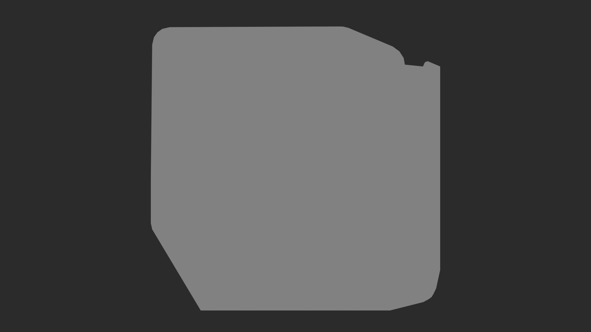
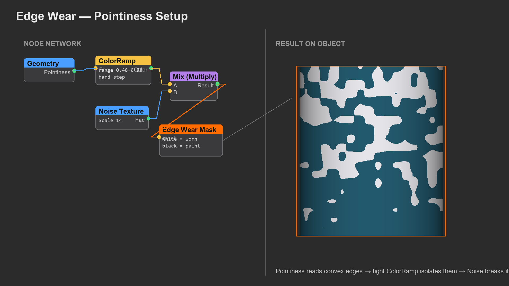
How to Access:
- Add Geometry node (Shift+A → Input → Geometry)
- Use Pointiness output (gray socket, value output)
- Connect to ColorRamp for control
Understanding Pointiness Values:
- Positive values (white): Convex areas, edges, corners, raised parts
- Zero (middle gray): Flat surfaces
- Negative values (black): Concave areas, crevices, indentations
- Range typically: -1 to +1, but depends on mesh detail
Using ColorRamp with Pointiness:
- For edge wear: Move black stop to ~0.5, white stop to ~0.6
- Only positive pointiness shows (edges)
- Tighter stops = only sharpest edges
- Wider stops = broader edge effect
- For crevice dirt: Move white stop to ~0.4, black stop to ~0.5
- Inverted! White in concave areas
- Dirt appears in recesses
- Adjust spread: How gradual vs. sharp the transition is
Common Pointiness Setups:
- Edge Wear: Geometry (Pointiness) → ColorRamp (limit to edges) → Mix Factor → Worn metal shows
- Edge Highlights: Pointiness → ColorRamp → Multiply with Roughness → Shinier edges
- Cavity Dirt: Pointiness → ColorRamp (inverted for concave) → Dirt layer visibility
- Combined: Edge wear AND cavity dirt using same Pointiness with different ColorRamps!
⚠️ Pointiness Requires Good Topology!
Pointiness calculation needs enough geometry detail to detect curvature. A cube with just 8 vertices shows no pointiness variation. The same cube with a Subdivision Surface modifier shows beautiful edge detection! Ensure your mesh has sufficient subdivision or edge loops where you want pointiness effects. The Modifier Stack affects pointiness calculation!
Quick fix: Add Subdivision Surface modifier (even just 1 level) to see pointiness work better. Apply Edge Split to create harder edges if needed. Pointiness reads the final mesh topology after modifiers!
🎯 Real-World Application: Look at any used metal tool—a wrench, hammer, or knife. The edges are shinier (worn smooth from use), the body has its original rough finish, and dirt hides in any engravings or recesses. That's pointiness masking in action! Edges = high pointiness = worn material. Recesses = low pointiness = dirt accumulation. Your CG should replicate this pattern for instant realism!
Combining Multiple Masks
The real power comes from combining masks! One mask isn't enough for realism. Combine procedural noise (randomness) with pointiness (edges) with AO (crevices) with facing (angle). Each adds another layer of logic. Dirt appears randomly BUT more in crevices AND more on upward surfaces. Wear appears randomly BUT primarily on edges AND more where hands touch. Layer your logic like you layer your materials!
💡 Mask Combination Techniques
1. Multiplying Masks (AND Logic)
- Method: Math node set to Multiply
- Effect: Both masks must be white for final white
- Use case: "Dirt in crevices AND on horizontal surfaces"
- Example: AO mask × Facing mask = dirt only in upward-facing crevices
- Multiplies intensities: 0.5 × 0.5 = 0.25 (more selective)
2. Adding Masks (OR Logic)
- Method: Math node set to Add
- Effect: Either mask white makes final white (additive)
- Use case: "Wear on edges OR on contact areas"
- Example: Pointiness mask + Noise mask = wear in more places
- Watch for: Values exceeding 1.0, may need to clamp
3. Mixing Masks (Blended Logic)
- Method: Mix node with both masks as inputs
- Effect: Blend between two mask patterns
- Factor controls: How much of each mask influences result
- Use case: Balancing procedural and painted masks
4. Masking the Mask (Nested Logic)
- Method: Use one mask to control another mask's strength
- Example: Noise mask controls how strongly AO affects result
- Creates: Variable dirt accumulation in crevices (more realistic!)
- Advanced: Chain multiple levels of mask control
🔧 Practical Example: Complex Dirt Mask
Building Realistic Dirt Distribution:
Layer 1 - Crevice Detection (Base Logic):
- Ambient Occlusion → ColorRamp → adjust for crevice depth
- Result: Dirt base appears in crevices
Layer 2 - Randomness (Natural Variation):
- Noise Texture (scale ~15) → ColorRamp → Random distribution
- Result: Not ALL crevices equally dirty
Layer 3 - Gravity Effect (Physics Logic):
- Texture Coordinate → Normal → Separate XYZ → Z component
- ColorRamp to favor upward surfaces
- Result: More dirt on surfaces facing up
Combining:
- Multiply AO × Noise (dirt in crevices, but random amount)
- Multiply result × Facing (strongest on upward surfaces)
- Add subtle Noise (overall variation)
- ColorRamp final result (control overall dirt coverage)
Final mask says: "Dirt accumulates primarily in upward-facing crevices, with random variation in amount, plus some general surface contamination." That's how real dirt works! The layered logic creates believable distribution.
Crevice Detection] --> D[Multiply] B[Noise Mask
Randomness] --> D D --> E[Multiply] C[Facing Mask
Angle-Based] --> E E --> F[Add] G[Overall Variation
Subtle Noise] --> F F --> H[ColorRamp
Final Control] H --> I[Complex
Realistic Mask] style I fill:#4CAF50,stroke:#333,stroke-width:2px,color:#fff
Building Your First Layered Material
Theory is great, but let's build something! Here's a step-by-step walkthrough for creating a classic layered material: painted metal with edge wear and rust. This combines everything we've learned—procedural textures, masks, Mix Shader nodes, and logical layer distribution. Follow along, and you'll have a production-ready material setup!
🎯 Workshop: Painted Metal with Wear
What we're creating: Old painted metal surface with worn edges exposing metal underneath, rust forming on exposed areas, and dirt in crevices. Four material layers!
Setup (2 minutes):
- Create test object: Add Cylinder (Shift+A → Mesh → Cylinder)
- Add Subdivision Surface modifier (level 2) for smooth curves
- Add Bevel modifier (0.02 width) for realistic edges
- New material, open Shader Editor
- Switch to Rendered viewport (Z → Rendered) with good lighting
Step 1: Base Paint Material
- Use existing Principled BSDF
- Base Color: Dark blue-green (RGB: 0.1, 0.3, 0.3)
- Metallic: 0.0 (paint is not metallic)
- Roughness: 0.4 (semi-matte paint)
- Result: Clean painted surface
Step 2: Add Paint Roughness Variation
- Add Noise Texture (Scale: 25, Detail: 4)
- Add ColorRamp after noise
- Set ColorRamp: Black at 0.35, White at 0.65 (centered around 0.5)
- Connect to Roughness input (replace 0.4)
- Result: Paint has subtle rough/smooth variation
Step 3: Create Edge Wear Mask
- Add Geometry node (Input → Geometry)
- Add ColorRamp to Pointiness output
- Adjust ColorRamp: Black at 0.5, White at 0.52 (tight range = sharp edges only)
- Don't connect yet—this is your edge wear mask
Step 4: Create Exposed Metal Material
- Add new Principled BSDF (don't delete the first one!)
- Base Color: Gray (RGB: 0.5, 0.5, 0.5)
- Metallic: 1.0 (it's metal!)
- Roughness: 0.3 (polished metal)
- Result: This is your exposed metal layer
Step 5: Mix Paint and Metal with Edge Mask
- Add Mix Shader node (Shift+A → Shader → Mix Shader)
- Connect painted material (first BSDF) to Input 1
- Connect metal material (second BSDF) to Input 2
- Connect edge wear mask (ColorRamp) to Factor
- Connect Mix Shader output to Material Output
- Result: Metal shows on edges, paint elsewhere!
Step 6: Add Rust to Exposed Metal (Bonus Layer!)
- Add third Principled BSDF for rust
- Base Color: Rust orange (RGB: 0.5, 0.2, 0.1)
- Metallic: 0.0 (rust is oxidized, not metallic)
- Roughness: 0.9 (very rough)
- Add Noise Texture (Scale: 50) as mask
- Add another Mix Shader
- Mix metal with rust, use noise as factor (reduces to 0.3 strength for subtle rust)
- Connect this to Input 2 of the first Mix Shader
- Result: Some exposed metal areas show rust!
Step 7: Polish and Refine
- Adjust edge mask ColorRamp positions for more/less wear
- Tweak rust noise scale for rust cluster size
- Add Bump node to rust layer for texture
- Experiment with mask combinations
Congratulations! You built a professional multi-layer material with logical wear patterns. This same structure works for countless material types—just change the base materials and masks!
Advanced Layering Patterns
✅ Common Professional Layering Patterns
Pattern 1: Base + Wear + Dirt (Three Layers)
- Base: Clean material (paint, plastic, whatever)
- Wear: Exposed underlayer (metal, substrate) on edges
- Dirt: Grime in crevices and on surfaces
- Structure: Base → Mix (wear mask) → Mix (dirt mask) → Output
Pattern 2: Dual Finish (Glossy + Matte)
- Layer 1: Glossy material (polished metal, clearcoat)
- Layer 2: Matte material (rough metal, flat paint)
- Mask: Roughness variation or wear pattern
- Use case: Brushed then polished metal, car paint with clearcoat
Pattern 3: Clearcoat Over Base (Two-Layer Shader)
- Don't use Mix Shader! Use Clearcoat parameter in Principled BSDF
- Base layer: Colored paint or material
- Clearcoat layer: Glossy protective layer on top
- Use case: Car paint, coated wood, glossy ceramics
Pattern 4: Layered Dirt (Multiple Dirt Types)
- Dirt 1: Crevice accumulation (AO mask)
- Dirt 2: Surface dust (facing + noise mask)
- Dirt 3: Splatter/stains (noise or texture mask)
- Structure: Stack multiple Mix Shaders, each adding dirt layer
Pattern 5: Age Progression (Temporal Layering)
- New: Base clean material
- Aged: Add wear on edges (light aging)
- Old: Add rust/patina (medium aging)
- Ancient: Add heavy dirt, more exposed areas
- Control: Single "age" value drives all masks!
💭 Material Artist's Wisdom: Complex materials aren't built in one session. Professionals iterate! Start with base material. Add first wear layer, test under different lighting. Add dirt layer, adjust masks. Refine, adjust, test, repeat. Sometimes you remove layers that don't help. The goal isn't maximum complexity—it's believability. Sometimes three well-tuned layers beat ten poorly thought-out layers. Quality over quantity!
🎓 Section Complete: Layered Material Workflows
You now know how to build complex, multi-layer materials using Mix Shaders, procedural masks, geometric attributes, and logical distribution rules. You understand the difference between Mix Shader and Mix Color, how to use Pointiness for edge wear, how to combine multiple masks, and how to structure professional layered materials. This is the core technique that separates hobbyist materials from production-quality work!
Next up: Advanced PBR techniques—diving deeper into the Principled BSDF parameters you might have overlooked, including Subsurface Scattering, Clearcoat, Sheen, Anisotropic, and proper IOR usage!
🔬 Advanced PBR Techniques
You've been using the Principled BSDF for a while now—Base Color, Roughness, Metallic, maybe Normal. But have you explored all those other parameters? Subsurface, Specular, Anisotropic, Sheen, Clearcoat, IOR, Transmission... they're not just decoration! Each simulates specific real-world optical phenomena. When used correctly, they're the difference between "looks like CG" and "looks like reality." These parameters encode decades of rendering research, modeling how light actually interacts with different materials. Let's unlock their power!
The Principled BSDF is called "principled" because it's based on physically-based rendering principles. It combines multiple BRDF models (Bidirectional Reflectance Distribution Functions—mathematical models of how light bounces off surfaces) into one uber-shader. Understanding each parameter means understanding light behavior. This knowledge applies beyond Blender—to any PBR system in any software. Master these concepts, and you master photorealistic rendering!
The Complete Principled BSDF Map
💡 Every Parameter Explained
Surface Properties (How Surface Appears):
Base Color
- The diffuse/base color of the material
- For metals: the reflective color (copper = orange, gold = yellow)
- For non-metals: the perceived surface color
- Range: Any RGB color
Metallic
- Whether material is metal (1.0) or non-metal (0.0)
- In-between values rarely physically accurate
- Effect: Metals reflect environment, non-metals don't
- Critical: Metals have no diffuse, only colored reflections
Roughness
- How rough/smooth the surface is
- 0.0 = perfect mirror, 1.0 = completely matte
- Effect: Controls how sharp vs. blurry reflections are
- Realism tip: Almost nothing is 0.0 or 1.0 in reality!
IOR (Index of Refraction)
- How much light bends passing through material
- Default 1.45 = glass-like
- Common values: Air = 1.0, Water = 1.33, Glass = 1.5, Diamond = 2.42
- Affects: Reflection intensity AND refraction in transparent materials
- Important: Even non-transparent materials should use correct IOR for accurate reflections!
💡 Advanced Surface Features
Subsurface (SSS - Subsurface Scattering)
- Simulates light penetrating surface and scattering inside
- Amount: How much light penetrates (0-1)
- Radius: How far light scatters (RGB for different colors)
- Scale: Overall size multiplier
- Essential for: Skin, wax, marble, milk, jade, leaves
Subsurface Color
- Color of scattered light inside material
- Example: Skin base color = tan, subsurface = red (blood)
- Often different from base color!
Specular
- Intensity of non-metal reflections
- Default 0.5 = 4% reflection (most materials)
- Range: 0-1, but realistic range is 0.3-0.6
- Rarely change: Most materials reflect ~4% (0.5 specular)
- When to adjust: Special materials (wet surfaces = higher)
Specular Tint
- Adds base color to non-metal reflections
- 0 = white reflections, 1 = colored reflections
- Use sparingly: Most non-metals have colorless reflections
- Exception: Some fabrics, special surfaces
Anisotropic
- Stretches reflections in one direction
- 0 = isotropic (normal), 1 = maximum stretch
- Essential for: Brushed metal, hair, grooved surfaces
- Direction: Controlled by Anisotropic Rotation or tangent
Sheen
- Soft velvet-like reflection at grazing angles
- Amount: Intensity of sheen effect
- Tint: Color of the sheen (0-1 from white to base color)
- Perfect for: Fabric, velvet, cloth, fuzzy surfaces
Clearcoat
- Adds second specular layer on top
- Amount: Intensity of coating layer
- Roughness: Separate roughness for clearcoat
- Use for: Car paint, coated wood, lacquered surfaces
- Why separate: Can have rough base + glossy coat!
💡 Transparency & Transmission
Transmission
- Amount of light passing through material
- 0 = opaque, 1 = fully transparent
- Uses IOR: Combines with IOR for refraction
- For: Glass, water, clear plastic, ice
Alpha
- Simple transparency mask
- 0 = invisible, 1 = opaque
- Difference from Transmission: No refraction, just cutout
- Use for: Leaves, curtains, alpha-mapped textures
Emission
- Makes material emit light
- Color: Color of emitted light
- Strength: Brightness (can go very high!)
- Use for: Light sources, screens, neon signs
Metallic
Roughness] C --> F[Subsurface
Anisotropic
Sheen
Clearcoat] D --> G[Transmission
Alpha
IOR] style A fill:#3a3a3a,stroke:#333,stroke-width:2px,color:#fff style C fill:#4CAF50,stroke:#333,stroke-width:2px,color:#fff
Subsurface Scattering: Light Beneath the Surface
Subsurface Scattering (SSS) is magical! It simulates translucent materials where light penetrates the surface, bounces around inside, and exits somewhere else. This is how skin looks alive, how wax candles glow, how marble has depth, how leaves show veins. Without SSS, these materials look dead—plastic-like. With SSS, they come alive with inner luminosity. It's computationally expensive but absolutely necessary for certain materials!
✅ Mastering Subsurface Scattering
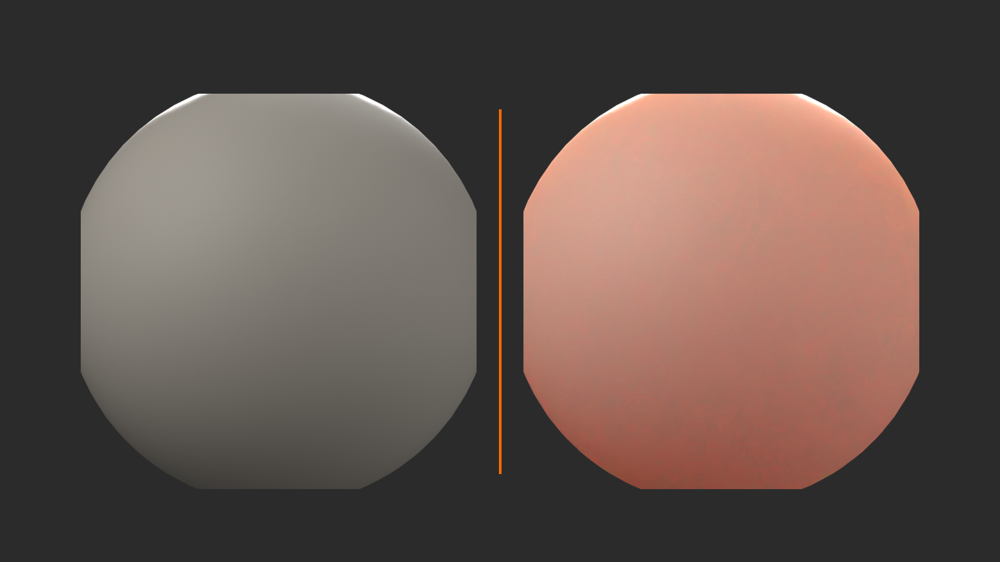
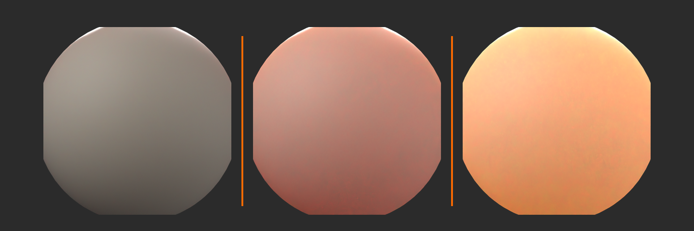
How SSS Works:
- Light hits surface at Point A
- Some light penetrates into material
- Light scatters inside (bouncing off internal structures)
- Light exits at Point B (nearby but different location)
- Creates soft glow, reduces harsh shadows
SSS Parameters in Detail:
Subsurface Amount (0-1):
- Blend between regular surface (0) and subsurface (1)
- Thin materials: Higher values (0.5-1.0) like paper, leaves
- Thick materials: Lower values (0.1-0.3) like skin, marble
- Why blend: Materials usually have both surface and subsurface components
Subsurface Radius (RGB Triple):
- How far each color channel scatters inside material
- Red = first value, Green = second, Blue = third
- Physical meaning: Different wavelengths scatter differently
- Skin example: Red scatters far (blood vessels), blue scatters less
- Typical: Red > Green > Blue values
- Units: Scene units (meters/cm depending on scale)
Subsurface Scale:
- Global multiplier for radius values
- Adjust when changing model scale
- Tip: Set radius for 1-meter scale, then use Scale to adjust
Subsurface IOR:
- Refractive index inside material
- Affects how light scatters internally
- Usually matches main IOR parameter
Subsurface Anisotropy:
- Directional scattering (advanced!)
- -1 = backscattering, 0 = isotropic, +1 = forward scattering
- Most materials: Leave at 0
🎨 SSS Values for Common Materials
| Material | Subsurface | Radius (R, G, B) | Color | Notes |
|---|---|---|---|---|
| Skin (Caucasian) | 0.2 - 0.4 | 3.67, 1.37, 0.68 | Red-ish | Red scatters most (blood) |
| Wax | 0.5 - 0.8 | 2.5, 2.5, 2.5 | Cream/yellow | Even scattering |
| Marble | 0.1 - 0.3 | 8.0, 4.0, 2.0 | White/veined | Subtle depth |
| Milk | 0.8 - 1.0 | 10.0, 10.0, 10.0 | White | Heavy scattering |
| Jade | 0.3 - 0.5 | 1.0, 5.0, 1.0 | Green | Green scatters more |
| Thin Leaves | 0.5 - 0.9 | 0.5, 2.0, 0.5 | Green | Strong backlight glow |
Scale matters! These values assume 1 Blender unit = 1 meter. For a character model at different scale, adjust Subsurface Scale parameter.
🎯 The Backlight Test: To see subsurface scattering at work, place a strong light behind your object. SSS materials glow beautifully—ears become translucent, wax candles illuminate from within, leaves show their structure. Without SSS, backlighting just creates a silhouette. This is the ultimate test! If your material should be translucent but doesn't glow when backlit, you need SSS!
⚠️ SSS Performance Warning
Subsurface scattering is expensive! Each SSS calculation requires tracing light paths through the volume. In Cycles, this significantly increases render time. In Eevee, SSS uses screen-space approximation (faster but less accurate).
Optimization Tips:
- Use SSS only where visible and necessary
- Lower Subsurface amount reduces cost (0.3 vs 1.0 = big difference)
- In Cycles: SSS samples in Render settings affect quality/speed
- For distant objects, consider faking SSS with regular shader
- Use Random Walk SSS method (faster than default Christensen-Burley for thick objects)
IOR: Index of Refraction
IOR is often overlooked but incredibly important! It controls two things: how much surfaces reflect (Fresnel effect) and how much light bends when passing through transparent materials (refraction). Even if your material isn't transparent, IOR affects reflection intensity at different angles. Different materials have different IOR values—using correct values adds subtle realism that viewers feel but might not consciously notice!
💡 Understanding IOR
What IOR Measures:
- Speed of light in material vs. speed in vacuum
- Formula: IOR = (speed in vacuum) / (speed in material)
- Vacuum = 1.0 exactly (light at maximum speed)
- All materials > 1.0 (light slows down inside)
- Higher IOR = more slowing = more bending = stronger reflections
Effects of IOR:
1. Reflection Intensity (Fresnel):
- Higher IOR = stronger reflections at all angles
- Fresnel effect: Surfaces more reflective at grazing angles
- IOR controls base reflection strength
- Example: Water (1.33) reflects less than glass (1.5)
2. Refraction (Bending):
- Only visible with Transmission > 0 (transparent materials)
- Higher IOR = more bending
- Example: Diamond (2.42) bends light dramatically (sparkle!)
- Glass (1.5) bends moderately
Why It Matters for Opaque Materials:
- Even solid materials reflect light differently based on IOR
- Plastic (IOR 1.45) looks different from glass (1.5)
- Using correct IOR makes materials feel right
- Subtle but important!
📊 IOR Reference Values
| Material | IOR Value | Notes |
|---|---|---|
| Vacuum/Air | 1.0 | No bending, minimum reflection |
| Water | 1.33 | Slight bending, weak reflection |
| Ice | 1.31 | Similar to water |
| Plexiglass/Acrylic | 1.49 | Common clear plastic |
| Glass (common) | 1.5 - 1.52 | Standard window glass |
| Crystal | 2.0 | High-quality glass |
| Ruby/Sapphire | 1.76 | Precious stones |
| Diamond | 2.42 | Extreme bending, brilliant sparkle |
| Alcohol | 1.36 | Slightly more than water |
| Oil | 1.47 | Cooking oil, petroleum |
Pro Tip: When in doubt, use 1.45 (Blender's default). It's a good middle ground for plastic and glass-like materials!
Anisotropic Reflections: Directional Highlights
Anisotropic reflections are directionally stretched rather than circular. Think brushed metal—reflections streak along the brush direction. Or vinyl records—circular highlights following the grooves. Hair strands—highlights streak along hair length. This happens because surface has microscopic directional grooves that reflect light preferentially in one direction. The Anisotropic parameter simulates this beautifully!
✅ Anisotropic Setup
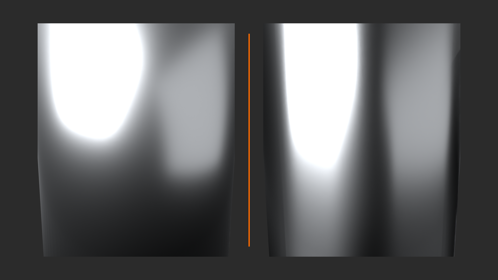
Parameters:
Anisotropic Amount (0-1):
- 0 = isotropic (normal round highlights)
- 1 = maximum stretch (extreme directional)
- Typical range: 0.3-0.8 for brushed metal
- Hair: Often 0.7-1.0
Anisotropic Rotation (0-1):
- Controls direction of anisotropy
- 0 = along V direction (typically vertical)
- 0.5 = rotated 180 degrees
- 1 = full rotation (back to 0)
- Driven by texture: For varying direction across surface
Tangent Input (Advanced):
- For precise directional control
- Use Vector input to define brush direction
- Hair systems: Automatically use hair tangent
🔧 Practical Anisotropic Applications
1. Brushed Metal:
- Anisotropic: 0.5-0.8
- Roughness: 0.2-0.4
- Metallic: 1.0
- Direction control: Use Object coordinates with Mapping rotation for brush direction
- Variation: Add subtle noise to Anisotropic Rotation for irregular brushing
2. Hair/Fur:
- Anisotropic: 0.7-1.0 (very directional)
- Roughness: 0.3-0.5
- Automatic: Hair particle system provides correct tangents
- Creates realistic hair shine
3. Vinyl Records/CDs:
- Anisotropic: 0.8-1.0
- Rotation: Driven by radial UV coordinates
- Creates circular highlights following grooves
4. Satin/Silk Fabric:
- Anisotropic: 0.3-0.5 (subtle)
- Sheen: Also add Sheen for fabric look
- Creates characteristic fabric shimmer
🎨 Artist's Tip: Anisotropic effects are most visible on curved surfaces under strong directional lighting. Test your anisotropic materials with a bright light source positioned to catch the surface at grazing angles. Flat lighting washes out anisotropic effects. Also, subtle anisotropy (0.2-0.4) adds interest to surfaces without being obvious—it's that "something looks right" feeling!
Sheen: The Fabric Parameter
Sheen simulates the soft, fuzzy reflection seen on fabric, particularly velvet and cloth. Unlike hard specular highlights on plastic or metal, fabric has soft, diffuse-like highlights from tiny fibers catching light. Sheen creates this effect—a soft glow at grazing angles. It's subtle but essential for convincing fabric materials. Without Sheen, fabric looks too plastic. With Sheen, it looks soft and touchable!
✅ Using Sheen Effectively
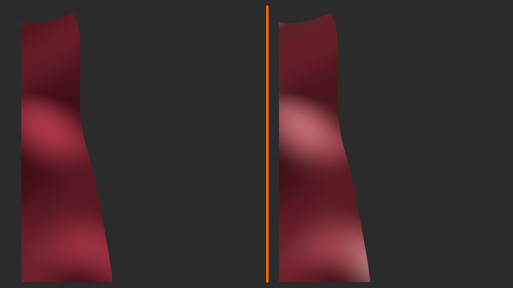
Sheen Amount (0-1):
- Intensity of sheen effect
- 0 = no sheen (default)
- 1 = maximum sheen (heavy velvet)
- Typical fabric: 0.3-0.6
- Velvet: 0.8-1.0
Sheen Tint (0-1):
- 0 = white sheen (achromatic)
- 1 = sheen takes base color (chromatic)
- Most fabrics: 0.5 (slightly colored)
- Creates: More natural fabric appearance
Combination with Other Parameters:
- Base Color: Fabric color
- Roughness: 0.8-1.0 (fabric is matte)
- Specular: 0.3-0.4 (low reflection)
- Sheen: 0.4-0.6 (soft glow)
- Optional: Slight anisotropic for weave direction
🧵 Fabric Material Recipe
Basic Fabric Material:
- Base Color: Your fabric color (any color)
- Metallic: 0.0 (fabric isn't metal)
- Roughness: 0.9 (very matte)
- Specular: 0.35 (low but not zero)
- Sheen: 0.5 (soft fabric glow)
- Sheen Tint: 0.5 (slightly colored)
Enhanced with Texture:
- Add fabric weave texture to Normal (subtle bump)
- Add slight color variation with Noise (fabric isn't perfectly uniform)
- For worn fabric: reduce roughness in high-wear areas (shinier from use)
Velvet Material:
- Same as fabric but Sheen = 0.8-1.0
- Roughness = 1.0 (completely matte)
- Creates that characteristic velvet softness
Clearcoat: Two-Layer Materials
Clearcoat adds a second specular layer on top of your base material. This is perfect for car paint (color base + clear glossy coat), lacquered wood (matte wood + glossy lacquer), or any material with a protective coating. The magic is that base and clearcoat can have different roughness values—rough base with glossy coat, creating depth and realism impossible with a single layer!
💡 Clearcoat Parameters
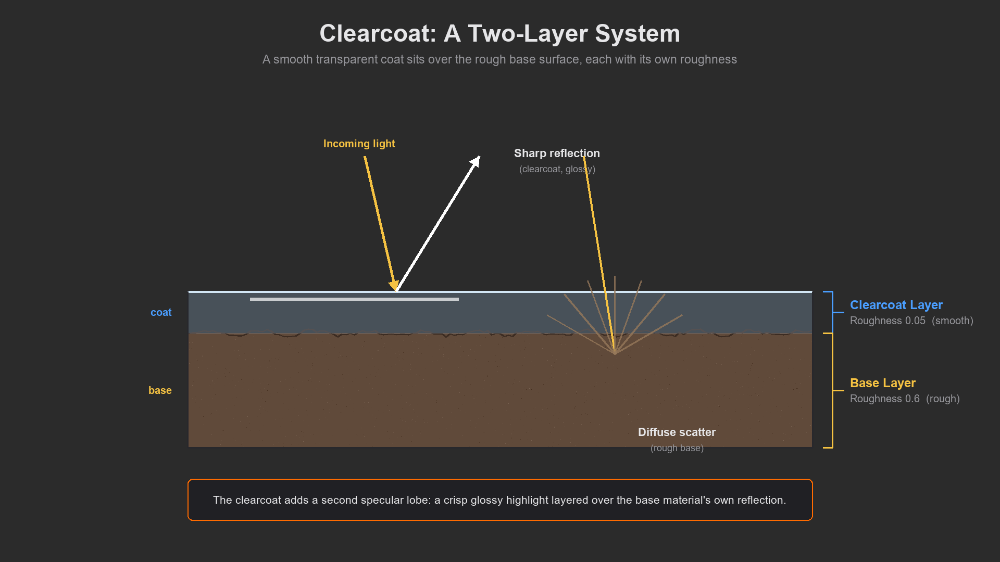
Clearcoat Amount (0-1):
- Intensity of clearcoat layer
- 0 = no clearcoat
- 1 = full clearcoat layer
- Car paint: 1.0 (strong protective coat)
- Light varnish: 0.3-0.5
Clearcoat Roughness:
- Separate roughness for clearcoat layer
- Independent from base roughness!
- Car paint: Base rough (0.5), Clearcoat smooth (0.05)
- Creates: Depth—sharp highlight from coat, soft reflection from base
Clearcoat Normal:
- Separate normal map for clearcoat
- Use case: Orange peel texture in car paint clearcoat
- Base can be smooth while clearcoat has texture
✅ Classic Clearcoat Applications
1. Car Paint (The Classic!):
- Base Color: Car color (red, blue, etc.)
- Metallic: 0.8-1.0 for metallic paint, 0.0 for solid color
- Roughness: 0.4-0.6 (base layer has texture)
- Clearcoat: 1.0 (full protective coat)
- Clearcoat Roughness: 0.05-0.1 (very glossy)
- Result: Deep, glossy automotive finish!
2. Lacquered Wood:
- Base: Wood texture with grain
- Base Roughness: 0.7 (matte wood)
- Clearcoat: 0.8 (strong varnish)
- Clearcoat Roughness: 0.1 (glossy lacquer)
- Creates: Visible wood grain with glossy finish
3. Coated Plastic:
- Base: Plastic color, slight roughness (0.5)
- Clearcoat: 0.5 (protective coating)
- Clearcoat Roughness: 0.2
- Use case: Phone cases, coated electronics
💡 Why Clearcoat Instead of Low Roughness? Can't you just set base Roughness to 0.05 for glossy? Technically yes, but clearcoat provides two benefits: (1) It creates depth—two specular layers at different roughnesses look more realistic, creating the appearance of a physical coating. (2) You can texture them separately—rough base with subtle normal map, glossy clearcoat with orange-peel texture. This separation is what makes automotive renders look professional!
🎓 Section Complete: Advanced PBR Techniques
You now understand the full power of the Principled BSDF! You know when and how to use Subsurface Scattering for translucent materials, correct IOR values for accurate reflections, Anisotropic for directional highlights, Sheen for fabric softness, and Clearcoat for layered automotive finishes. These parameters aren't arbitrary—each models real physics. Use them correctly and your materials transcend CG into photorealism!
Next up: Shader Node Groups—how to build reusable, modular material components that save time and ensure consistency across projects!
📦 Shader Node Groups
You've built complex material setups—dozens of nodes creating intricate effects. But here's the problem: every time you need that effect, you rebuild it from scratch. Enter Node Groups—Blender's system for packaging node networks into reusable components. Think of them as custom nodes you create yourself. Build a complex dirt mask once, package it as a node group, and reuse it everywhere. Create a library of material components (edge wear, cavity dirt, procedural wood grain) and assemble materials like building blocks. This is how professionals work efficiently!
Node groups aren't just about saving time—they're about consistency and maintainability. When you use the same dirt mask across ten materials, and later decide to improve it, update the node group once and all ten materials improve! They also simplify complex shader networks—collapse fifty nodes into one clean interface with labeled controls. Your shader editor stays organized, your workflow accelerates, and your materials maintain consistent quality. Let's master this professional technique!
Understanding Node Groups
💡 What Are Node Groups?
The Concept:
- A node group is a container that holds a network of nodes
- From the outside, it looks like a single node
- Inside, it contains your complete node setup
- You define which parameters are exposed (inputs/outputs)
- Analogy: Like a function in programming—complex code packaged with simple interface
Benefits:
- Reusability: Build once, use everywhere
- Organization: Collapse complexity into single node
- Consistency: Same effect across all uses
- Maintainability: Update once, changes everywhere
- Sharing: Export and share with others
- Clean interface: Hide complexity, expose only relevant controls
What Can Be Grouped:
- Shader nodes (materials)
- Geometry nodes (modeling)
- Compositor nodes (post-processing)
- Texture nodes (procedural textures)
- This lesson focuses on shader node groups
15 Nodes] --> B[Select Nodes] B --> C[Group Nodes
Ctrl+G] C --> D[Single Node Group
Clean Interface] D --> E[Reuse Anywhere] style A fill:#999,stroke:#333,stroke-width:2px,color:#fff style D fill:#4CAF50,stroke:#333,stroke-width:2px,color:#fff
Creating Your First Node Group
Let's build a practical node group step by step. We'll create a "Procedural Dirt Mask" that combines noise and AO—a component you'd use repeatedly. This will teach you the complete workflow: building nodes, grouping them, defining inputs/outputs, and reusing the group.
🎯 Workshop: Creating a Dirt Mask Node Group
Step 1: Build the Node Network (First Time Manual Setup)
- Open Shader Editor with a material
- Add Noise Texture (Scale: 15, Detail: 4)
- Add ColorRamp after Noise (adjust range to 0.4-0.6)
- Add Shader to RGB node (for AO access)
- Add AO node, connect to Shader to RGB
- Add second ColorRamp for AO (adjust for crevice sensitivity)
- Add Math node (Multiply) to combine both ColorRamps
- Result: Dirt mask combining random noise with crevice detection
Step 2: Select Nodes to Group
- Box select: Click and drag to select all the nodes you want in the group
- Include: Noise Texture, both ColorRamps, Shader to RGB, AO, Math multiply
- Don't include: The final nodes you're connecting to (leave connection points free)
- Tip: You want everything that creates the effect, but leave inputs/outputs flexible
Step 3: Create the Node Group
- With nodes selected, press Ctrl+G (or Menu → Node → Make Group)
- Magic happens: All selected nodes collapse into one!
- You now have a green node group with inputs and outputs
- The grouped nodes are still there—just hidden inside
Step 4: Edit Inside the Group
- Enter group: Tab key (with node group selected) or double-click
- You'll see your original network plus "Group Input" and "Group Output" nodes
- These special nodes define the group's interface
- Exit group: Tab key again (or click "Go to Parent Node Tree" at top)
Step 5: Organize the Interface (Inside Group)
- Inside the group, find "Group Input" node
- This shows what parameters users can adjust
- Add useful controls:
- Connect Scale from Group Input to Noise Scale (user can adjust dirt size)
- You can add Value inputs in Group Input node (click + button)
- Name them clearly: "Dirt Scale", "Dirt Amount", etc.
- Group Output: Should have your final mask value
Step 6: Name and Organize
- Name the group: Select node group (from outside), press F2, rename to "Procedural Dirt Mask"
- Add description: In properties, you can add description/tooltip
- Organize outputs: Make sure output is clearly labeled "Mask"
Step 7: Test the Group
- Exit the group (Tab)
- Use the group output as a mask for Mix Shader
- Test that adjusting exposed parameters works
- Tweak interface inside group if needed
Step 8: Reuse the Group
- In any material, Shift+A → Group → Procedural Dirt Mask
- Your custom node appears in the Add menu!
- It's ready to use with clean interface
- All instances share the same group definition
⚠️ Node Group Linking vs Appending
Understanding how node groups are stored:
- Within file: Node groups are stored in the .blend file
- Multiple uses: All instances reference the same group definition
- Editing: Edit group once, all instances update
- Between files: Can append node groups from other files (File → Append → NodeTree)
- Making unique: Click shield icon next to group name to make instance independent
Pro Tip: Create a "Material Library.blend" file with all your common node groups. Append them into projects as needed!
Node Group Best Practices
✅ Professional Node Group Techniques
1. Clear, Descriptive Names
- Bad: "Group.001", "MyNodeGroup"
- Good: "Edge Wear Mask", "Wood Grain Pattern", "Cavity Dirt"
- Name describes what it does, not how it works
- Future you will thank present you!
2. Expose Only Necessary Parameters
- Too many inputs = overwhelming interface
- Too few inputs = not flexible enough
- Sweet spot: 2-5 key parameters that users need to adjust
- Internal complexity hidden, interface simple
- Example: "Dirt Amount" (yes), "Noise ColorRamp Second Stop Position" (no—too technical!)
3. Set Sensible Defaults
- Default values should work out-of-box for common cases
- Users can adjust but shouldn't have to
- Example: Noise scale default to 15 (good medium scale)
- Test defaults in multiple scenarios
4. Use Descriptive Socket Names
- Inputs/outputs should have clear labels
- Bad: "Value", "Factor", "Output"
- Good: "Mask Strength", "Dirt Intensity", "Edge Wear Amount"
- Hover tooltips help but good names are better
5. Organize with Frames (Inside Group)
- Use frames to organize complex groups internally
- Label sections: "Noise Generation", "AO Calculation", "Final Blend"
- Makes editing group later much easier
- Add frame: Select nodes, Ctrl+J
6. Version Your Groups
- If making significant changes, consider new version
- Naming: "Dirt Mask v1", "Dirt Mask v2"
- Prevents breaking old materials that use the group
- Can gradually migrate to new version
7. Test Thoroughly
- Test group in multiple materials/scenarios
- Try extreme parameter values (make sure nothing breaks)
- Ensure it works with both Eevee and Cycles if applicable
- Check performance (avoid unnecessary complexity)
Common Node Group Patterns
Certain node setups are used so frequently they deserve to be node groups. Here are professional-grade patterns you should build into your library. Each solves a common material challenge and will save you hours over time!
💡 Essential Node Groups to Build
1. Edge Wear Mask
- Contains: Geometry (Pointiness) → ColorRamp → Optional noise multiplier
- Inputs: Edge Sharpness, Edge Width, Randomness
- Output: Mask (white on edges, black elsewhere)
- Use case: Paint wear, metal exposure on corners, damage
2. Cavity Dirt Mask
- Contains: Shader to RGB → AO → ColorRamp → Noise multiplier
- Inputs: Dirt Amount, Crevice Sensitivity, Randomness
- Output: Mask (white in crevices)
- Use case: Dirt accumulation, grime in details
3. Roughness Variation
- Contains: Noise → ColorRamp → Math (to add to base roughness)
- Inputs: Base Roughness, Variation Amount, Variation Scale
- Output: Final Roughness Value
- Use case: Non-uniform surface finish
4. Color Variation
- Contains: Base color → Noise → HSV adjustment → Mix
- Inputs: Base Color, Variation Amount, Hue Shift, Value Shift
- Output: Varied Color
- Use case: Natural color variation in wood, stone, organic materials
5. Triplanar Mapping
- Contains: The complex triplanar setup from earlier lesson
- Inputs: Texture (or texture coordinates), Blend Sharpness
- Outputs: UV coordinates for texture sampling
- Use case: Stretch-free texturing on any geometry
6. Fresnel Mask
- Contains: Layer Weight (Facing) → Power/Multiply for control
- Inputs: Fresnel Power, IOR
- Output: Mask (white at grazing angles)
- Use case: Rim lighting, edge highlights, angle-based effects
7. Bump Blend
- Contains: Multiple bump inputs → Vector math to combine
- Inputs: Bump 1, Bump 2, Bump 3, Strengths
- Output: Combined normal
- Use case: Layering multiple surface details
🎯 Build Your Library Strategy: Don't try to create all node groups at once. Instead, when you build a complex setup you're proud of, immediately convert it to a node group. Over time, you'll naturally accumulate a library of your most-used patterns. Keep them in a master .blend file, organized by category (Masks, Patterns, Effects, etc.). This library becomes your secret weapon for rapid material creation!
Advanced Node Group Techniques
✅ Pro-Level Node Group Features
1. Nested Node Groups
- Node groups can contain other node groups!
- Example: "Complete Material" group contains "Edge Wear" and "Cavity Dirt" groups
- Build complexity hierarchically
- Benefit: Update sub-groups, all parent groups update
- Warning: Don't nest too deep (3 levels max for sanity)
2. Multiple Outputs
- Node groups can have many outputs
- Example: Wood grain group outputs: Color, Roughness, Normal
- One group provides multiple material aspects
- Users pick which outputs they need
3. Optional Inputs
- Inputs can have default values if not connected
- Inside group: Check if input is connected, use default if not
- Makes groups more flexible
- Example: "Custom Texture" input defaults to procedural if nothing connected
4. Driver Integration
- Expose group inputs to drivers/animations
- Use case: "Age" parameter drives wear amount
- Animate materials procedurally
- Control from Python scripts
5. Asset Browser Integration
- Mark node groups as assets (shield icon in outliner)
- Add preview thumbnail
- Tag with keywords
- Benefit: Browse and drag-drop from Asset Browser
- Pro workflow: Build asset library of node groups
Node Group Workflow Example
🏗️ Professional Material Assembly
Scenario: Building a worn metal material using node groups
Step 1: Add Base Material
- Start with Principled BSDF
- Set up clean metal (metallic 1.0, base color gray, roughness 0.3)
Step 2: Add Roughness Variation (Node Group)
- Shift+A → Group → "Roughness Variation"
- Connect output to Principled Roughness input
- Adjust: Base Roughness = 0.3, Variation = 0.15
- Result: Non-uniform surface finish
Step 3: Add Edge Wear (Node Group)
- Shift+A → Group → "Edge Wear Mask"
- Create second Principled BSDF (rust material)
- Use Edge Wear output as Mix Shader factor
- Result: Rust appears on edges
Step 4: Add Cavity Dirt (Node Group)
- Shift+A → Group → "Cavity Dirt Mask"
- Create dirt material (dark, rough)
- Add another Mix Shader with cavity mask
- Result: Dirt in crevices
Step 5: Fine-Tune
- Adjust each node group's exposed parameters
- Balance between layers
- Test under different lighting
Time Saved:
- Without groups: 30-45 minutes setting up masks and blending
- With groups: 5-10 minutes assembling pre-built components
- Plus: Consistent quality, no forgotten details
Sharing and Managing Node Groups
💡 Node Group Library Management
Creating a Master Library File:
- Create new .blend file: "Material_Library.blend"
- Create one material for each node group category
- Build your node groups in these materials
- Name everything clearly
- Categories: Masks, Patterns, Effects, Complete Materials
Using Library in Projects:
- Method 1: Append
- File → Append → Material_Library.blend → NodeTree
- Select node groups to import
- They become part of project file
- Method 2: Link
- File → Link (not Append)
- Node groups stay in library file
- Updates to library affect all linked projects
- Pro workflow but requires careful file management
- Method 3: Asset Browser
- Mark node groups as assets in library file
- Set library path in preferences
- Drag-drop from Asset Browser
- Most convenient for large libraries
Backup and Version Control:
- Keep library file backed up (it's valuable!)
- Version control if collaborating (Git works with .blend)
- Document what each group does (text datablocks in file)
- Include example materials showing groups in action
⚠️ Node Group Pitfalls to Avoid
Common mistakes and how to avoid them:
- Over-Grouping:
- Not everything needs to be a group
- Simple 2-3 node setups can stay loose
- Group when pattern repeats or is complex
- Under-Documenting:
- 6 months later, you won't remember what "Group.043" does
- Name clearly, add tooltips/descriptions
- Consider adding text notes inside group
- Too Many Parameters:
- Exposing every internal value overwhelms users
- Focus on key creative controls
- Advanced users can enter group if needed
- No Testing:
- Test groups in multiple scenarios before considering done
- Edge cases reveal problems
- Better to find issues in test than production
- Forgetting to Update:
- If you improve a commonly-used group, announce it
- In team settings, coordinate group updates
- Consider making new version rather than breaking old
💭 The Node Group Mindset: Professional material artists think in components, not individual nodes. They see a material as an assembly of functional blocks: "I need edge wear, cavity dirt, color variation, and roughness noise." Rather than manually wiring dozens of nodes, they drop in pre-built, tested components and adjust parameters. This component-based thinking isn't just faster—it's more reliable, more maintainable, and produces more consistent results. Start thinking in reusable components!
🎓 Section Complete: Shader Node Groups
You now know how to create, organize, and use shader node groups! You understand the workflow for building reusable components, best practices for clean interfaces, essential patterns to include in your library, and advanced techniques like nesting and multiple outputs. This knowledge transforms you from node-by-node material building to efficient component-based assembly. Your material creation speed and consistency will skyrocket!
Coming up next: hands-on projects where you'll apply everything you've learned! We'll build four complete professional materials from scratch: realistic wood, weathered metal, procedural stone, and subsurface skin shader. Time to put theory into practice!
🌳 Project 1: Realistic Wood Shader
Time to build something beautiful! We're creating a photorealistic wood material from scratch using only procedural textures. No image textures—pure math and artistry. This project combines everything: procedural patterns (Wave + Noise), multi-scale layering, color variation, roughness variation, and bump detail. By the end, you'll have wood that looks like you could feel the grain. This is a showcase material—the kind that makes people ask "is that real wood or CG?" Let's build it!
Wood is perfect for learning advanced shading because it has so many characteristic features to replicate: growth rings, grain direction, color variation, knots (optional), surface texture, and varying density. Real wood is never uniform—it's a rich tapestry of patterns at multiple scales. We'll capture all of this procedurally, creating a material that's infinitely customizable and works on any wood object without UV unwrapping!
Understanding Wood Structure
💡 What Makes Wood Look Like Wood?
Key Visual Features:
1. Growth Rings (Primary Pattern)
- Concentric circles from tree center
- Not perfectly regular—organic variation
- Rings closer together = denser wood (darker)
- Rings farther apart = lighter wood
- Creates: The "wood ring" pattern everyone recognizes
2. Wood Grain (Directional Texture)
- Fine lines running along wood length
- Follows growth direction
- Visible as subtle streaks and fiber patterns
- Scale: Much finer than growth rings
3. Color Variation
- Not uniform brown—varies from tan to dark brown
- Rings alternate lighter/darker (spring/summer growth)
- Random color variation within rings
- Some areas naturally darker or redder
4. Surface Texture
- Wood pores (tiny holes where sap traveled)
- Grain raises and valleys
- Not perfectly smooth—subtle surface relief
- Varies: Rough-sawn vs. sanded vs. polished
5. Roughness Variation
- Dense ring areas smoother (harder wood)
- Lighter areas slightly rougher (softer wood)
- Grain direction affects how light catches
Wave Texture] A --> C[Wood Grain
Fine Noise] A --> D[Color Variation
Multiple Scales] A --> E[Surface Texture
Bump Detail] A --> F[Roughness Variation
Following Rings] B --> G[Combine All] C --> G D --> G E --> G F --> G G --> H[Photorealistic Wood] style A fill:#3a3a3a,stroke:#333,stroke-width:2px,color:#fff style H fill:#4CAF50,stroke:#333,stroke-width:2px,color:#fff
Project Setup
✅ Before We Start Building
Scene Setup (5 minutes):
- Test object: Add Cylinder (will be wood log cross-section)
- Or use Cube (will be wood plank)
- Or use UV Sphere (to see how rings wrap)
- Scale appropriately: Scale object to reasonable size (2-3 units)
- Subdivide: Add Subdivision Surface modifier (1-2 levels) for smooth surface
- Lighting: Add HDRI or three-point lighting
- Good lighting essential to see material properly!
- Use warm lighting for wood (matches natural settings)
- Viewport: Switch to Rendered view (Z → Rendered)
- Render engine: Cycles recommended (Eevee works but Cycles shows detail better)
Shader Editor Preparation:
- Create new material: "Wood Procedural"
- Open Shader Editor (plenty of space—we'll build complex network)
- Start with default Principled BSDF
- Pro tip: Use frames (Ctrl+J) to organize as you build
Building the Wood Shader: Step by Step
🎯 Complete Workshop: Procedural Wood Material
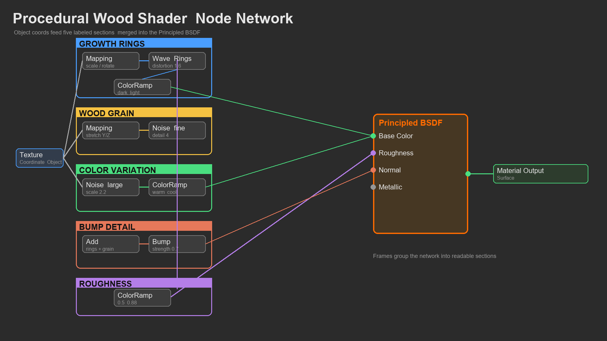
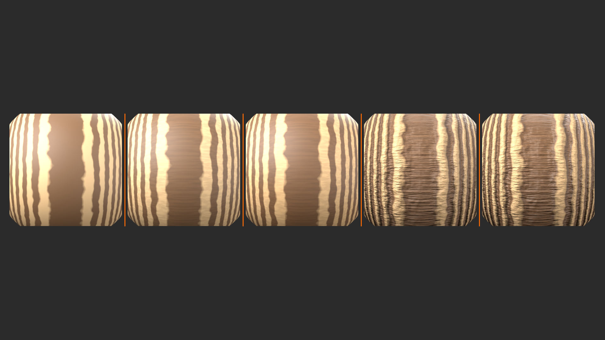
Step 1: Create Growth Rings (The Foundation)
- Add Texture Coordinate node
- We'll use Object coordinates (better for directional control)
- Add Mapping node
- Connect Texture Coordinate → Object to Mapping → Vector
- Rotation: Rotate Z-axis if needed to align rings properly
- Add Wave Texture
- Connect Mapping → Vector to Wave Texture
- Wave Type: Rings (circular pattern)
- Scale: 3.0 (spacing between rings)
- Distortion: 2.0 (makes rings irregular—critical!)
- Detail: 3.0 (adds complexity)
- Observe result: You should see concentric rings. Too perfect? Keep going!
Step 2: Add Ring Irregularity (Nature Isn't Perfect)
- Add Noise Texture (for ring distortion)
- Scale: 0.5 (very large scale—affects overall ring shape)
- Detail: 2
- Add Vector Math node (set to Add)
- Connect Mapping output to Vector Math input 1
- Connect Noise Color to Vector Math input 2
- This warps the coordinate space
- Add Math node (Multiply) before Vector Math
- Connect Noise → Multiply (by 0.3) → Vector Math
- Why: Controls strength of distortion
- Connect Vector Math output to Wave Texture Vector
- Result: Rings now irregular, more organic!
Step 3: Create Ring Color Pattern
- Add ColorRamp after Wave Texture
- Connect Wave Color → ColorRamp Color
- Configure ColorRamp for wood colors:
- Stop 1 (Position 0.0): Light tan (RGB: 0.6, 0.4, 0.25)
- Stop 2 (Position 0.3): Medium brown (RGB: 0.4, 0.25, 0.15)
- Stop 3 (Position 0.7): Medium brown (same as Stop 2)
- Stop 4 (Position 1.0): Dark brown (RGB: 0.2, 0.12, 0.08)
- Why 4 stops: Creates bands of light/dark rings
- Interpolation: B-Spline (smooth color transitions)
- Result: Alternating light/dark ring bands
Step 4: Add Overall Color Variation
- Add another Noise Texture (large scale color variation)
- Scale: 2.0 (large areas of color shift)
- Detail: 4
- Add ColorRamp after this noise
- Range: Set to output values from 0.4 to 0.6 (subtle variation)
- Add Mix Color node (set to Mix or Multiply)
- Input A: Ring colors (from Step 3)
- Input B: Color variation (from this step)
- Factor: 0.3 (subtle influence)
- Result: Wood color varies across surface naturally
Step 5: Add Fine Wood Grain Texture
- Add Noise Texture (fine scale)
- Scale: 50 (very fine detail)
- Detail: 6 (complex grain)
- Roughness: 0.7 (softer pattern)
- Add ColorRamp
- Adjust to increase contrast slightly
- This creates visible grain streaks
- Add Mix Color node
- Blend grain texture with color from Step 4
- Mode: Overlay or Multiply
- Factor: 0.15 (subtle but visible)
- Connect result to Base Color of Principled BSDF
- Checkpoint: You now have colored wood with rings and grain!
Step 6: Add Roughness Variation
- Use the Wave Texture output again (rings affect roughness!)
- Dense rings = harder wood = smoother
- Light areas = softer wood = rougher
- Add ColorRamp to Wave output (separate from color one)
- Map ring pattern to roughness values
- Black (0.0): 0.3 roughness (smooth)
- White (1.0): 0.6 roughness (rough)
- Add Noise Texture (additional roughness variation)
- Scale: 25 (medium detail)
- Creates surface imperfections
- Mix both: Add Math node (Add or Mix)
- Ring-based roughness + noise variation
- Divide by 2 if values exceed 1.0
- Connect to Roughness input
- Result: Roughness follows wood structure!
Step 7: Add Surface Bump Detail
- Create bump from fine grain noise
- Use the fine noise from Step 5 (scale 50)
- Add Bump node
- Connect fine noise Color → Bump Height
- Strength: 0.1 (subtle surface texture)
- Distance: 0.1 (controls bump intensity)
- Add second Bump node (for ring raised texture)
- Connect Wave texture → Bump Height
- Strength: 0.05 (very subtle ring relief)
- Combine bumps:
- Connect first Bump Normal → second Bump Normal input
- Connect second Bump output → Principled BSDF Normal
- This stacks bump effects
- Result: Wood has subtle surface texture!
Step 8: Final Principled BSDF Settings
- Base Color: Connected from Step 5 (full color network)
- Metallic: 0.0 (wood isn't metal)
- Roughness: Connected from Step 6 (variable roughness)
- Specular: 0.3 (wood has low specularity)
- Normal: Connected from Step 7 (bump detail)
- Optional - Subsurface:
- For thin wood (veneer): Subsurface 0.1, Radius (0.5, 0.3, 0.2)
- Makes wood glow slightly when backlit
- Skip for solid wood objects
Step 9: Test and Refine
- Rotate view: Check from different angles
- Test lighting: Add strong side light to see surface detail
- Adjust parameters:
- Wave Scale: Changes ring spacing
- Wave Distortion: Makes rings more/less irregular
- ColorRamp positions: Adjust wood color variety
- Noise scales: Fine-tune detail levels
- Try variations:
- Change ColorRamp colors for different wood species
- Reduce distortion for straighter grain
- Increase fine noise for rougher wood
Wood Variations and Customization
✅ Creating Different Wood Types
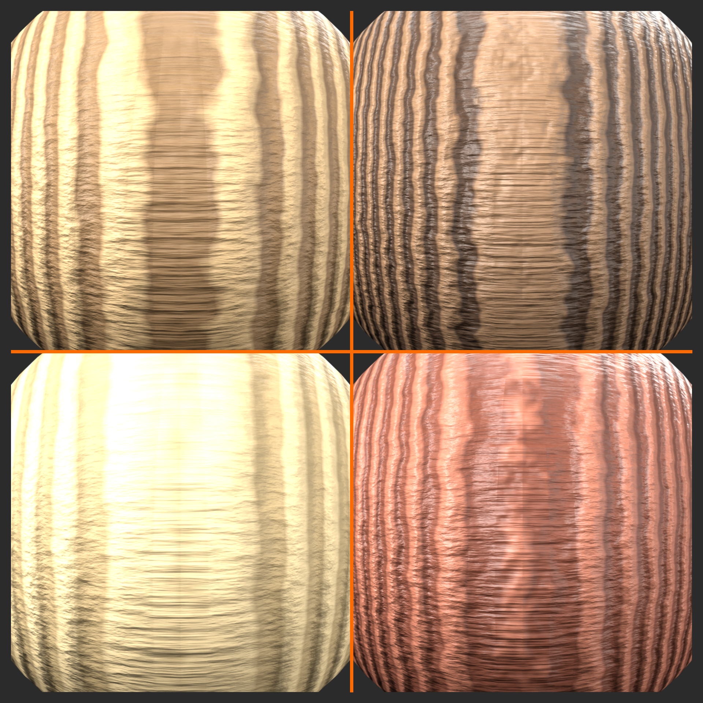
Oak (Light, Pronounced Grain):
- Colors: Light tan (0.7, 0.5, 0.3) to medium brown (0.5, 0.35, 0.2)
- Wave Scale: 2.5 (wider rings)
- Wave Distortion: 2.5 (very irregular)
- Fine grain: Scale 60, strong visibility
Walnut (Dark, Rich):
- Colors: Medium brown (0.3, 0.2, 0.15) to very dark (0.15, 0.1, 0.08)
- Wave Scale: 4.0 (tighter rings)
- Add purple tint: Slight blue/purple in darker areas
- Roughness: Generally smoother (0.2-0.4)
Pine (Light, Softer Appearance):
- Colors: Very light tan (0.8, 0.6, 0.4) to light brown (0.6, 0.4, 0.25)
- Wave Scale: 2.0 (wide, gentle rings)
- Wave Distortion: 1.5 (less distortion, straighter)
- Roughness: Higher overall (0.5-0.8, softer wood)
- Yellower tones: Increase red and green slightly
Mahogany (Red-Brown, Elegant):
- Colors: Red-brown (0.4, 0.2, 0.15) to dark red-brown (0.25, 0.12, 0.1)
- More red: Increase red channel significantly
- Fine grain: Less visible, smoother appearance
- Roughness: Lower (0.2-0.4, polished look)
Weathered/Old Wood:
- Colors: Grayer tones (reduce saturation)
- Roughness: Higher (0.7-0.9)
- Bump strength: Increase significantly (0.3-0.5)
- Add cracks: Use Voronoi texture as additional bump
- Add dirt layer: Mix in dirt material in crevices
Advanced Wood Techniques
💡 Taking Wood to the Next Level
Adding Knots (Advanced):
- Add Voronoi Texture (Scale: 1-2, F1 distance)
- Use Distance output as mask for knot locations
- ColorRamp with tight range = scattered knots
- Mix darker color where knots appear
- Add spiral pattern inside knots (Wave + rotation)
- Challenge: Complex but very realistic!
Plank Separation (For Floors/Boards):
- Use Brick Texture or Manual coordinate division
- Creates separate planks with gaps
- Each plank can have slightly different color/scale
- Add beveled edges at plank boundaries
Anisotropic Reflections (Polished Wood):
- Enable Anisotropic in Principled BSDF (0.3-0.5)
- Use Object coordinates for consistent direction
- Creates streaky reflections along grain
- Very effective for polished furniture
Clearcoat for Varnished Wood:
- Clearcoat: 0.8 (strong protective coat)
- Clearcoat Roughness: 0.05-0.1 (glossy finish)
- Base roughness stays higher (shows grain through coating)
- Perfect for lacquered furniture
Troubleshooting Common Issues
⚠️ Wood Material Problems and Fixes
Problem: Rings look too perfect/computer-generated
- Solution: Increase Wave Distortion (try 2.0-3.0)
- Increase Detail parameter in Wave (adds irregularity)
- Add more noise-based warping to coordinates
Problem: Wood looks too dark/light
- Solution: Adjust ColorRamp colors
- Check scene lighting (wood needs good light to show!)
- Adjust color range in overall variation noise
Problem: No visible surface texture
- Solution: Increase Bump strength
- Check that Bump is connected to Normal input
- View from grazing angle to see bump better
- Add strong side lighting
Problem: Rings stretched or wrong orientation
- Solution: Adjust Mapping node rotation
- Use Object coordinates instead of Generated
- Ensure object scale is applied (Ctrl+A → Scale)
Problem: Pattern too repetitive
- Solution: Increase noise scale used for variation
- Add multiple layers of noise at different scales
- Increase Detail in procedural textures
🎨 Artistic Note: Real wood photography often shows wood that's been sanded, stained, and sealed—it's enhanced! Don't feel bad about making your CG wood "perfect." That said, subtle imperfections sell realism: slight color inconsistency, random darker/lighter patches, grain that's not perfectly aligned. Observe real wood carefully. The difference between good and great wood materials is in these small details!
🎓 Project 1 Complete: Procedural Wood!
Congratulations! You've built a sophisticated procedural wood material from scratch. This material demonstrates multi-scale texturing, coordinate manipulation, layered detail, and physically-based rendering principles. The techniques here—using Wave for patterns, Noise for variation, ColorRamp for control, and Bump for surface detail—apply to countless other materials. You've learned a professional workflow that scales to any complexity level!
Save this material! It's a building block. Package it as a node group, save it to your library, and use it whenever you need wood. Better yet, create variations (oak, walnut, pine) and save each as a preset.
Next up: Project 2 - Weathered Metal, where we'll create a multi-layered metal material with rust, paint, wear, and advanced masking techniques!
⚙️ Project 2: Weathered Metal
Now for the ultimate layered material challenge! Weathered metal is the perfect showcase for everything you've learned about masking, layering, and material complexity. We're building a painted metal surface with four distinct layers: base metal, paint, edge wear exposing metal, rust forming on exposed areas, and dirt accumulating in crevices. Each layer has its own material properties, and masks control where each appears based on logical, real-world rules. This is production-level material work!
What makes this project special is the storytelling. Every weathered surface has a history. Paint applied years ago. Edges worn from handling and use. Rust creeping in where moisture reached bare metal. Dirt settling in protected spots. Your material will tell this story visually. When someone looks at your render, they should feel the age, the use, the environment. This is material artistry at its finest—using shaders to create narrative!
Understanding Metal Weathering
💡 The Life Story of Painted Metal
Timeline of Degradation:
Stage 1: Factory Fresh
- Clean metal base (steel, aluminum, iron)
- Uniform paint coat applied
- Smooth, consistent surface
- Appearance: Perfect, unblemished
Stage 2: Early Use (Months)
- Fingerprints and oils on frequently touched areas
- Fine scratches from handling
- Edges begin showing wear (paint thins)
- Appearance: Slightly used but maintained
Stage 3: Heavy Use (Years)
- Edge wear: Paint completely gone on corners, bare metal exposed
- Surface wear: Paint worn thin in high-contact areas
- Scratches: Deep gouges through paint to metal
- Dirt: Accumulating in crevices and corners
- Early rust: Orange spots where metal is exposed
Stage 4: Neglected/Outdoor Exposure (Decades)
- Paint failure: Chipping, peeling, large bare areas
- Rust spreading: From exposed edges, creeping under paint
- Surface oxidation: Even painted areas showing corrosion
- Heavy dirt/grime: Thick accumulation, staining
- Appearance: Obviously aged, abandoned look
Our Goal: Create Stage 3 material—well-used but not destroyed. Shows age and use but still functional. This is the sweet spot for realism!
Steel/Iron] --> B[+ Paint Layer
Protective Coating] B --> C[+ Edge Wear
Paint Removed] C --> D[+ Rust Layer
Metal Oxidation] D --> E[+ Dirt Layer
Environmental Grime] E --> F[Weathered Metal
Complete Material] style A fill:#999,stroke:#333,stroke-width:2px,color:#fff style F fill:#4CAF50,stroke:#333,stroke-width:2px,color:#fff
Material Layer Breakdown
✅ The Four Material Layers
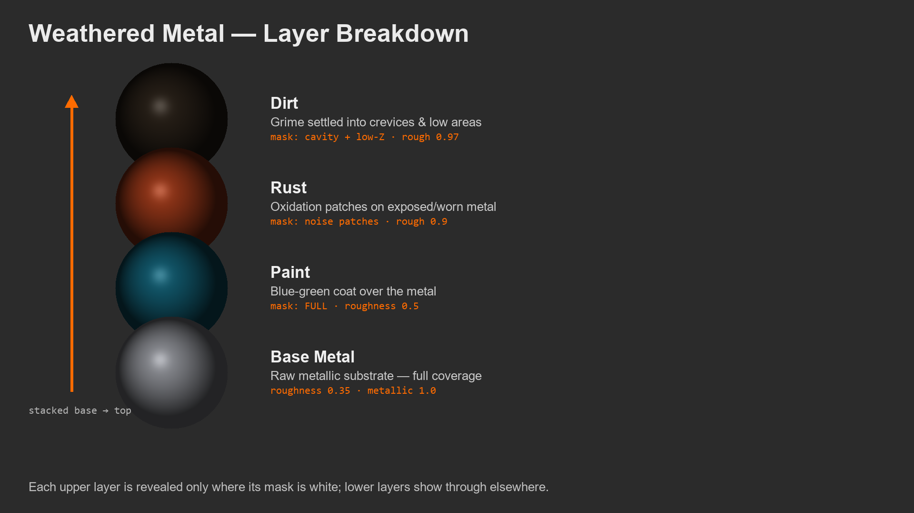
Layer 1: Base Metal (Foundation)
- Material type: Steel/Iron
- Base Color: Medium gray (0.5, 0.5, 0.5)
- Metallic: 1.0 (pure metal)
- Roughness: 0.3-0.4 (slightly worn metal, not mirror)
- Purpose: Shows through where paint is gone
- Visibility: Only at edges and damage areas
Layer 2: Paint (Primary Surface)
- Material type: Non-metallic coating
- Base Color: Your choice! (Dark blue, olive green, gray common for industrial)
- Metallic: 0.0 (paint isn't metal)
- Roughness: 0.4-0.5 (semi-matte finish)
- Purpose: Main visible surface, protective coat
- Visibility: Most of surface except worn areas
Layer 3: Rust (Oxidation)
- Material type: Iron oxide (non-metallic)
- Base Color: Orange-brown (0.5, 0.25, 0.1) to dark rust (0.3, 0.15, 0.08)
- Metallic: 0.0 (rust is oxidized, not metallic anymore)
- Roughness: 0.8-0.95 (very rough, porous)
- Purpose: Shows metal degradation, adds realism
- Visibility: On exposed metal, especially edges where moisture collects
Layer 4: Dirt/Grime (Environmental)
- Material type: Accumulated contamination
- Base Color: Dark brown-gray (0.15, 0.12, 0.1)
- Metallic: 0.0
- Roughness: 0.9-1.0 (very matte)
- Purpose: Environmental storytelling, adds age
- Visibility: In crevices, recessed areas, protected corners
Project Setup
✅ Scene Preparation
Test Object Setup:
- Add Cylinder (or any mechanical object)
- Represents pipe, barrel, machinery
- Scale to reasonable size (2-3 units)
- Add Subdivision Surface modifier
- Level 2 for smooth curves
- Critical: Pointiness needs smooth geometry!
- Add Bevel modifier
- Amount: 0.02-0.05
- Segments: 2-3
- Why: Creates realistic edges (nothing is perfectly sharp)
- Beveled edges = better edge wear effect
- Optional: Add details
- Boolean some dents, indentations
- More geometry detail = more places for weathering
Lighting Setup:
- HDRI recommended: Shows metal reflections beautifully
- Or Three-Point Lighting: With strong key light for edge highlights
- Add fill light: To see details in crevices
- Test with side lighting: Reveals surface bumps and wear
Render Settings:
- Use Cycles: For accurate metal reflections and AO
- Rendered viewport shading
- AO needed: Enable if using cavity dirt mask
Building the Weathered Metal: Complete Workflow
🎯 Master Workshop: Multi-Layer Metal Material
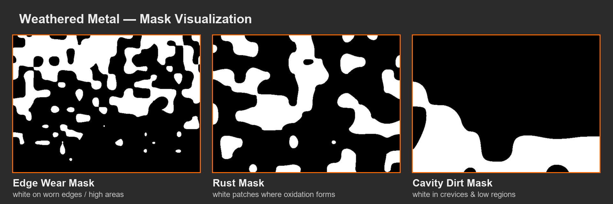
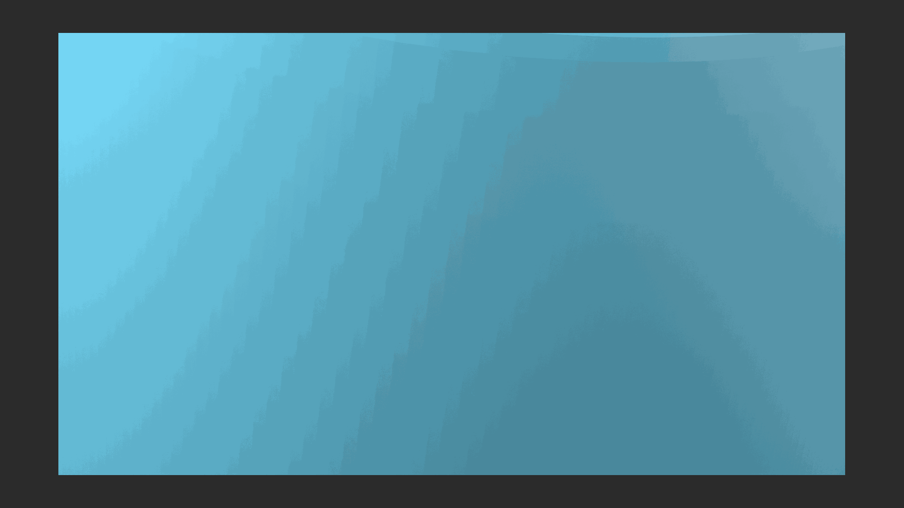
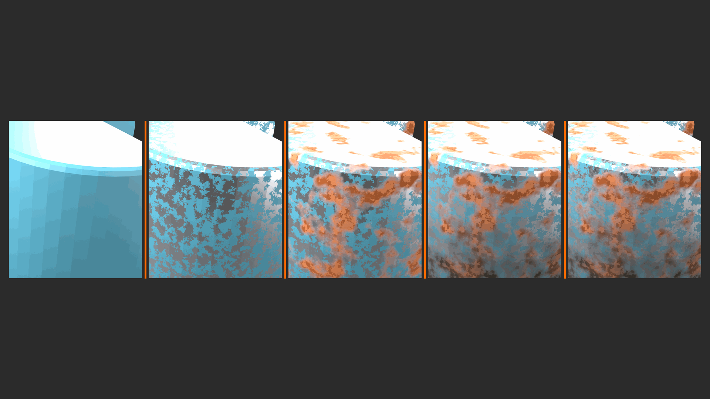
Phase 1: Create Base Materials (The Building Blocks)
- Paint Material (Principled BSDF #1)
- Base Color: Dark blue-green (0.1, 0.3, 0.3) or your choice
- Metallic: 0.0
- Roughness: 0.45
- This will be our primary material
- Add Paint Roughness Variation:
- Noise Texture (Scale: 25, Detail: 4)
- ColorRamp (range: 0.4 to 0.5)
- Connect to Roughness (replaces 0.45)
- Result: Paint not perfectly uniform
- Add subtle paint color variation:
- Noise Texture (Scale: 5, Detail: 3) — large scale
- ColorRamp (very subtle, 0.48 to 0.52)
- Mix Color (Multiply) with base color, Factor: 0.1
- Result: Paint has slight color variation
Phase 2: Create Edge Wear Mask
- Add Geometry node (for Pointiness)
- Use Pointiness output
- Add ColorRamp to Pointiness
- Black stop: 0.50 (neutral pointiness)
- White stop: 0.52 (tight range = only sharp edges)
- Interpolation: Linear
- Result: White on edges, black elsewhere
- Add Noise for wear variation
- Noise Texture (Scale: 15, Detail: 4)
- ColorRamp to increase contrast
- Multiply masks together
- Math node (Multiply)
- Pointiness mask × Noise mask
- Why: Edges wear, but randomly (not all edges equally)
- Result: Organic, believable wear pattern
- Control wear amount
- Add Math node (Multiply) to final mask
- Value: 1.5-2.0 (brightens mask = more wear)
- Add ColorRamp to clamp values 0-1
- This is your "Edge Wear Mask"
Phase 3: Create Clean Metal Material
- Add Principled BSDF #2 (Metal Layer)
- Base Color: Gray (0.5, 0.5, 0.5)
- Metallic: 1.0
- Roughness: 0.35
- Add metal scratches (optional but great):
- Noise Texture (Scale: 100, Detail: 2) — very fine
- ColorRamp (high contrast)
- Connect to Bump (Strength: 0.05)
- Connect Bump Normal to Metal Principled Normal
- Result: Metal has micro-scratches
Phase 4: Mix Paint and Metal
- Add Mix Shader node
- Input 1: Paint material (Principled #1)
- Input 2: Metal material (Principled #2)
- Factor: Edge Wear Mask from Phase 2
- Connect to Material Output (temporarily to test)
- Checkpoint: You should see metal exposed on edges!
- Adjust: If too much/little wear, adjust mask multiplication value
Phase 5: Create Rust Material
- Add Principled BSDF #3 (Rust Layer)
- Base Color: Use Noise for variation!
- Create varied rust color:
- Noise Texture (Scale: 20, Detail: 6)
- ColorRamp with multiple stops:
- Stop 1: Orange rust (0.6, 0.3, 0.15)
- Stop 2: Medium rust (0.4, 0.2, 0.1)
- Stop 3: Dark rust (0.2, 0.1, 0.05)
- Connect to Base Color
- Rust properties:
- Metallic: 0.0 (rust isn't metallic)
- Roughness: 0.9 (very rough, porous)
- Add rust surface texture:
- Noise Texture (Scale: 80, Detail: 8) — fine bumpy texture
- Bump node (Strength: 0.3) — rust is bumpy!
- Connect to Rust Principled Normal
Phase 6: Create Rust Mask
- Rust should appear on exposed metal:
- Use Edge Wear Mask as starting point
- But not ALL exposed metal is rusty
- Add randomness to rust:
- Noise Texture (Scale: 10, Detail: 4)
- ColorRamp (adjust for rust coverage)
- Combine with edge wear:
- Math node (Multiply)
- Edge Wear Mask × Rust Noise
- Result: Rust appears on some worn edges, not all
- Boost mask for visibility:
- Math (Multiply by 0.5-0.8)
- Less rust than bare metal = realistic
- This is your "Rust Mask"
Phase 7: Layer Metal and Rust
- Add Mix Shader node (Metal + Rust)
- Input 1: Metal material (clean)
- Input 2: Rust material
- Factor: Rust Mask from Phase 6
- Connect output to Input 2 of Paint/Metal Mix Shader
- Replace the clean metal with metal/rust mix
- Now the exposed layer shows both metal AND rust!
- Checkpoint: Orange rust on some worn edges!
Phase 8: Create Dirt Material and Mask
- Add Principled BSDF #4 (Dirt Layer)
- Base Color: Dark brown-gray (0.12, 0.1, 0.08)
- Metallic: 0.0
- Roughness: 0.95 (almost completely matte)
- Create Cavity Dirt Mask:
- Add Shader to RGB node
- Add Ambient Occlusion node
- Connect AO Color → Shader to RGB Shader
- Use Color output from Shader to RGB
- Control dirt amount:
- ColorRamp after AO
- Black stop: 0.3 (less dirt)
- White stop: 0.8 (crevices get dirt)
- Adjust positions for more/less dirt
- Add randomness to dirt:
- Noise Texture (Scale: 20)
- ColorRamp
- Multiply with AO mask
- Result: Not ALL crevices equally dirty
- Optional - Facing-based dirt:
- Layer Weight node → Facing output
- ColorRamp (favor upward surfaces)
- Multiply with cavity mask
- Result: More dirt on horizontal surfaces
Phase 9: Final Layer Assembly
- Add Mix Shader node (Everything + Dirt)
- Input 1: Paint/Metal/Rust mix (everything so far)
- Input 2: Dirt material
- Factor: Cavity Dirt Mask from Phase 8
- Connect to Material Output Surface
- Material structure:
- Paint base
- → Mixed with (Metal + Rust) on edges
- → Mixed with Dirt in crevices
- Four materials, three Mix Shader nodes!
Phase 10: Polish and Refinement
- Test from multiple angles
- Rotate view to see all edges
- Check crevices have dirt
- Verify rust appears logically
- Adjust mask strengths:
- Too much wear? Reduce edge mask brightness
- Not enough rust? Increase rust mask factor
- Dirt too subtle? Adjust AO ColorRamp range
- Fine-tune colors:
- Paint color to match desired look
- Rust color variety (more orange vs. brown)
- Dirt color based on environment (gray dust vs. brown mud)
- Test lighting scenarios:
- Strong side light (shows bump detail)
- Soft ambient (shows color better)
- Outdoor HDRI (shows environment reflections)
Advanced Weathering Techniques
💡 Taking It Further
Peeling Paint (Advanced):
- Use Voronoi Texture (small scale) as mask for paint chips
- Combine with edge wear for realistic peeling pattern
- Add Displacement for actual 3D paint edges (expensive!)
- Or use Bump for painted edge relief (cheaper)
Streaking Rust (Water Damage):
- Use Gradient Texture (vertical) as directional mask
- Multiply with noise for irregular streaks
- Apply to rust mask → rust runs downward from edges
- Very effective for outdoor weathering!
Oil/Grease Stains:
- Create fifth material layer: darker, shinier areas
- Lower roughness (0.2-0.3) in stained areas
- Use noise mask for random distribution
- Perfect for machinery, automotive parts
Decals/Labels:
- Image texture for warning labels, logos
- Use Alpha for transparency
- Add wear to decal itself (faded, scratched)
- Layer over paint, under dirt
Dents and Damage:
- Use Geometry → True Normal vs Shading Normal
- Detect concave dents, apply different wear
- Dented areas often show more paint damage
- Advanced: use particle system for impact marks
Variations and Customization
✅ Different Metal Types and Ages
Lightly Used (Industrial Equipment):
- Reduce edge wear mask strength (less exposed metal)
- Reduce rust mask significantly (minimal rust)
- Lighter dirt (less accumulation)
- Cleaner paint (less color variation)
Heavily Weathered (Abandoned Machinery):
- Increase edge wear (large bare metal areas)
- Heavy rust coverage (multiply rust mask by 2-3)
- Thick dirt layers (increase AO influence)
- Paint very faded (reduce saturation)
- Add peeling/chipping paint
Coastal/Marine Exposure:
- Much more rust (salt accelerates corrosion)
- White salt deposits (additional layer)
- Rust streaking downward (water flow)
- Metal more pitted (deeper bump)
Aluminum (Different Metal Type):
- Base metal color: Lighter gray (0.7, 0.7, 0.7)
- No rust! Aluminum oxidizes white, not orange
- Replace rust layer with white oxidation
- Generally smoother, less rough texture
Brass/Copper:
- Base metal color: Orange-yellow for copper, gold for brass
- Patina instead of rust: Green-blue oxidation
- Creates beautiful green patina in crevices
- Often appears shinier (lower roughness)
Troubleshooting
⚠️ Common Issues and Solutions
Problem: No edge wear visible
- Check: Is Subdivision Surface applied? (Pointiness needs smooth geometry)
- Check: Did you add Bevel modifier? (Creates detectible edges)
- Solution: Increase edge wear mask brightness (multiply by 2-3)
- Solution: Widen ColorRamp range on pointiness (0.45-0.55 instead of 0.50-0.52)
Problem: Rust everywhere, too much
- Solution: Reduce rust mask multiplication factor (0.3-0.5)
- Adjust rust noise ColorRamp to limit coverage
- Ensure rust only appears where metal is exposed
Problem: No dirt visible in crevices
- Check: Is AO enabled in scene? (Cycles only)
- Solution: Increase AO Distance in Shader to RGB node
- Solution: Widen dirt ColorRamp range
- Check: Does geometry have crevices/details?
Problem: Material looks too uniform/fake
- Solution: Add more noise variation layers
- Increase Detail parameter in existing noises
- Add subtle color variation to each material layer
- Add micro-detail bump textures
Problem: Performance issues (slow viewport)
- Solution: Reduce Noise Detail parameters
- Disable AO in viewport, enable for renders only
- Use lower subdivision in viewport
- Consider baking some procedural textures to images
🎨 Material Storytelling: Every weathered surface tells a story. Where is this object? Indoors (less weathering) or outdoors (more rust, dirt)? How is it used? High-contact areas wear differently than neglected corners. What's the climate? Humid environments rust faster. Desert environments show dust, not moisture damage. Think about your object's life story and let the material reflect that narrative. This attention to logical detail is what separates good materials from great ones!
🎓 Project 2 Complete: Weathered Metal!
Incredible work! You've built a production-quality, multi-layered material with sophisticated masking, logical wear patterns, and photorealistic results. This material demonstrates professional-level shader network organization, mask combination techniques, and physical plausibility. The skills here—layering materials, creating believable masks, thinking about real-world degradation—apply to any complex surface you'll ever need to create!
This is portfolio material. Seriously. A well-executed weathered metal material showcases more technical skill than most beginner portfolios combined. Save it, document your process, and show it off!
Next up: Project 3 - Procedural Stone, where we'll create realistic rock surfaces with color variation, surface detail, and multiple scales of texture!
🗿 Project 3: Procedural Stone
Time to create something timeless—literally! Stone is one of the most satisfying materials to build procedurally because it's all about texture layering at multiple scales. Think about real stone: large color patches from mineral deposits, medium-scale surface roughness from erosion, fine cracks and pits from weathering, and subtle color variation throughout. We'll capture all of this without a single photo texture, creating stone that works on any geometry at any scale. This is pure procedural artistry!
What makes this project unique is the geological authenticity. Real stone forms over millennia through pressure, heat, and mineral crystallization. Different stone types—granite, limestone, sandstone, marble—have distinct visual characteristics. We'll build a flexible base stone material, then show you how to customize it for different stone types. By the end, you'll have a material system that creates believable, natural-looking stone for architectural visualization, game environments, or geological accuracy!
Understanding Stone Characteristics
💡 What Makes Stone Look Like Stone?
Key Visual Features of Natural Stone:
1. Color Variation (Multi-Scale)
- Large patches: Different mineral concentrations create color zones
- Medium variation: Individual crystals or grain structure
- Fine detail: Subtle color noise, impurities
- Never uniform: Stone always has color complexity
- Stone-specific: Granite speckled, sandstone banded, marble veined
2. Surface Texture (Roughness)
- Depends on stone type: Rough sandstone vs. smooth marble
- Erosion patterns: Weathering creates texture
- Crystal structure: Visible in some stones (granite)
- Varies across surface: Smooth areas vs. rough patches
3. Surface Relief (Bump/Displacement)
- Erosion: Softer minerals erode faster, creating relief
- Cracks and fissures: From stress and weathering
- Pits and holes: Where minerals dissolved or fell out
- Scale varies: Large cracks to microscopic pits
4. Subtle Subsurface (Some Stones)
- Marble, alabaster: Slight translucency, inner glow
- Most stones: Opaque, no subsurface needed
- Backlit effect: Thin marble slabs glow beautifully
5. Reflectance Properties
- Generally non-metallic: Metallic = 0
- Variable roughness: 0.6-1.0 depending on type and finish
- Polished vs. raw: Same stone, different roughness
- Slightly higher IOR: 1.5-1.6 for most stones
Mineral Patches] A --> C[Medium Scale
Crystal/Grain] A --> D[Fine Detail
Texture Noise] A --> E[Surface Relief
Cracks & Pits] A --> F[Roughness
Variation] B --> G[Combine All Scales] C --> G D --> G E --> G F --> G G --> H[Photorealistic Stone] style A fill:#3a3a3a,stroke:#333,stroke-width:2px,color:#fff style H fill:#4CAF50,stroke:#333,stroke-width:2px,color:#fff
Project Setup
✅ Scene Preparation
Test Object Options:
- UV Sphere: Great for seeing overall pattern, no UV stretching issues with procedural
- Cube: Good for architectural stone blocks
- Rock mesh: Use Rock Generator add-on or sculpt organic rock shape
- Plane with Subdivision + Displacement: For terrain/ground stone
- Recommendation: Start with UV Sphere, then test on your actual geometry
Modifiers:
- Subdivision Surface: Level 2-3 for smooth result
- Optional Displace: For macro surface variation (we'll add later)
- Scale: 2-3 units for testing (stone should feel substantial)
Lighting:
- Strong directional light: To see surface texture clearly
- Or HDRI: Outdoor environment shows stone naturally
- Key tip: Stone needs strong lighting to show detail!
- Soft lighting makes stone look flat
Render Settings:
- Cycles preferred: Better bump detail and subtle reflections
- Rendered viewport for live feedback
- Eevee works but reduce expectations for subtle detail
Building the Stone Shader: Complete Workflow
🎯 Master Workshop: Procedural Stone Material
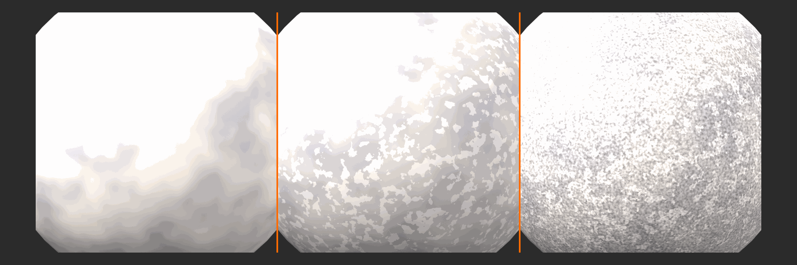
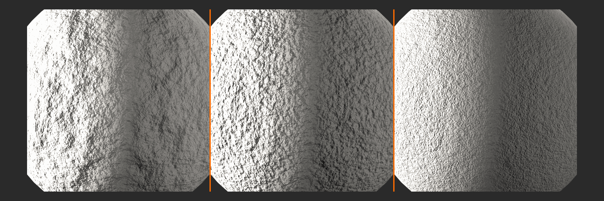
Phase 1: Large-Scale Color Foundation
- Base color choice:
- Granite: Medium gray as base (0.4, 0.4, 0.4)
- Sandstone: Tan-beige (0.6, 0.5, 0.4)
- Limestone: Light gray-beige (0.6, 0.6, 0.55)
- We'll use granite gray as our example
- Add Texture Coordinate node
- Use Generated or Object coordinates
- Generated: Good for most cases
- Add Mapping node (for control)
- Connect coordinate to Mapping
- Allows scale/rotation adjustment
- Add Noise Texture (large color patches)
- Scale: 2.0 (large mineral zones)
- Detail: 3
- Roughness: 0.5
- Add ColorRamp for color zones
- Create 3-4 color stops:
- Stop 1 (0.0): Dark gray (0.3, 0.3, 0.3)
- Stop 2 (0.4): Medium gray (0.4, 0.4, 0.4)
- Stop 3 (0.7): Lighter gray (0.5, 0.5, 0.5)
- Stop 4 (1.0): Light gray (0.55, 0.55, 0.55)
- Interpolation: B-Spline (smooth transitions)
- Create 3-4 color stops:
- Result: Large-scale color variation across surface
Phase 2: Medium-Scale Detail (Crystal Structure)
- Add Voronoi Texture (for crystal/grain pattern)
- Scale: 20 (medium-sized features)
- Feature Output: Use F1 Distance
- Distance Metric: Smooth F1 (organic look)
- Add ColorRamp after Voronoi
- Adjust to create visible but subtle cells
- Range: 0.45 to 0.55 (subtle contrast)
- Alternative - Noise Texture instead:
- For non-crystalline stones (sandstone, limestone)
- Scale: 15, Detail: 6
- Creates granular texture rather than crystal pattern
- Blend with large-scale color:
- Add Mix Color node (Overlay or Multiply mode)
- Input A: Large-scale color from Phase 1
- Input B: Medium-scale detail
- Factor: 0.3-0.4 (subtle influence)
- Result: Stone now has grain/crystal structure visible
Phase 3: Fine Detail (Micro-Texture)
- Add Noise Texture (fine scale)
- Scale: 80 (very fine detail)
- Detail: 8 (complex, natural)
- Roughness: 0.6 (not too sharp)
- Add ColorRamp
- Increase contrast slightly
- Creates visible micro-texture
- Mix with color from Phase 2:
- Mix Color node (Overlay mode works great)
- Factor: 0.15-0.2 (very subtle but visible)
- Connect to Principled BSDF Base Color
- Checkpoint: Stone now has three scales of color detail!
Phase 4: Color Adjustment and Warmth
- Optional - Add color tint:
- Most stones aren't pure gray—have slight warmth or coolness
- Add Hue/Saturation/Value node
- Connect after all color mixing
- Saturation: Reduce to 0.8-0.9 (stone is low saturation)
- Value: Adjust overall brightness
- Hue: Shift slightly toward warm (yellow-orange) or cool (blue)
- Or use ColorRamp with tinted colors:
- Add slight yellow to grays for sandstone feel
- Add slight blue for cold marble feel
Phase 5: Roughness Variation
- Stone is generally rough:
- Raw stone: Roughness 0.8-1.0
- Weathered stone: Roughness 0.7-0.9
- Polished stone: Roughness 0.1-0.3
- Add Noise Texture (roughness variation)
- Scale: 25 (medium variation)
- Detail: 4
- Add ColorRamp
- For raw stone: Range 0.75 to 0.95
- For polished stone: Range 0.1 to 0.25
- Creates subtle roughness variation
- Connect to Principled BSDF Roughness
- Result: Surface doesn't reflect uniformly
Phase 6: Surface Bump Detail (Multi-Scale)
- Create large-scale surface relief:
- Use Voronoi or Musgrave texture
- Musgrave Type: Ridged Multifractal (rocky!)
- Scale: 3-5 (large features)
- Detail: 4
- Add Bump node (for large relief)
- Connect Musgrave Color → Bump Height
- Strength: 0.2 (visible but not extreme)
- Distance: 0.1
- Create medium-scale texture:
- Noise Texture (Scale: 30, Detail: 6)
- Add second Bump node
- Strength: 0.1
- Create fine surface pits:
- Noise Texture (Scale: 100, Detail: 8)
- Add third Bump node
- Strength: 0.05 (very subtle)
- Stack bump nodes:
- Large Bump Normal → Medium Bump Normal input
- Medium Bump Normal → Fine Bump Normal input
- Fine Bump output → Principled BSDF Normal
- This combines all three scales!
- Result: Stone has multi-scale surface relief
Phase 7: Add Cracks (Optional but Effective)
- Add Voronoi Texture (for crack pattern)
- Scale: 8-12
- Feature Output: Distance to Edge
- This isolates cell boundaries = natural cracks
- Add ColorRamp
- Very tight range: Black at 0.0, White at 0.05
- Creates thin crack lines
- Use as mask for darker color in cracks:
- Mix Color node
- Mix base stone color with darker color (multiply by 0.5)
- Use crack mask as factor
- Also use as bump:
- Add Bump node for cracks
- Strength: 0.15 (cracks are recessed)
- Add to bump stack
- Result: Visible cracks with depth!
Phase 8: Final Principled BSDF Configuration
- Base Color: Connected (multi-scale color network)
- Metallic: 0.0 (stone isn't metal)
- Roughness: Connected (variation network)
- Raw stone: 0.8-1.0
- Polished: 0.1-0.3
- Specular: 0.5 (default, standard reflection)
- IOR: 1.55 (slightly higher than default)
- Most stones have IOR around 1.5-1.6
- Normal: Connected (multi-scale bump stack)
- Subsurface (optional, for marble):
- Amount: 0.1-0.2
- Radius: (8.0, 4.0, 2.0) — red scatters most
- Scale: 1.0
- Only for thin/translucent stones!
Phase 9: Test and Refine
- View from different angles
- Check that all detail scales are visible
- Rotate to see bump detail catch light
- Adjust scale hierarchy:
- Large features should dominate
- Medium detail adds interest
- Fine detail visible up close
- Test lighting:
- Strong directional: Shows texture clearly
- Soft ambient: Shows color better
- Backlight: Tests translucency (marble)
- Adjust parameters:
- Noise scales for different stone sizes
- ColorRamp positions for color intensity
- Bump strengths for surface relief
Stone Type Variations
✅ Creating Different Stone Types
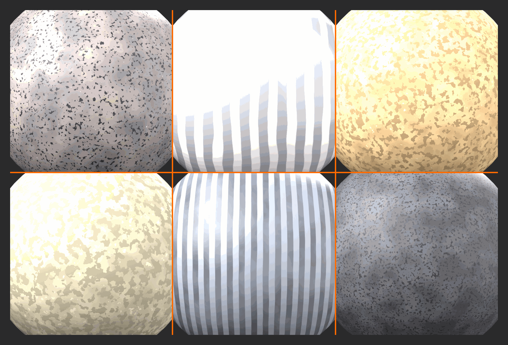
Granite (Speckled, Crystalline):
- Base color: Gray (0.4, 0.4, 0.4) to dark gray (0.2, 0.2, 0.2)
- Crystal structure: Use Voronoi (scale 20-30) for visible crystals
- Speckles: Add high-scale noise (80-100) with contrasting colors
- Include: Black specks (biotite), white specks (quartz), pink specks (feldspar)
- Roughness: 0.3 if polished, 0.8 if raw
- Bump: Medium strength, shows crystal facets
Marble (Smooth, Veined):
- Base color: White (0.9, 0.9, 0.9) or cream (0.9, 0.85, 0.8)
- Veins: Use Wave Texture (Bands) with heavy distortion
- Noise-distorted coordinates create organic veining
- Gray to dark gray veins
- Thin, flowing patterns
- Roughness: Very low (0.1-0.2) — marble is naturally smooth and polishable
- Subsurface: Yes! Amount 0.15, Radius (8, 4, 2)
- Bump: Very subtle, marble is smooth
- Colors: White (Carrara), Green (Serpentine), Black (Nero Marquina)
Sandstone (Layered, Grainy):
- Base color: Tan (0.6, 0.5, 0.4) to red-brown (0.5, 0.3, 0.2)
- Banding: Use Wave Texture or Gradient (horizontal layers)
- Grain: High-scale noise (50-80) for sandy texture
- Color variation: Significant, with warm tones (yellows, oranges, reds)
- Roughness: High (0.8-0.95) — sandstone is porous
- Bump: Medium-high, shows grain and layering
Limestone (Smooth, Fossil-Rich):
- Base color: Light gray-beige (0.65, 0.62, 0.58)
- Subtle banding: Gentle wave or noise variation
- Fossils (advanced): Use Voronoi (small scale) for shell/fossil shapes
- Roughness: Medium (0.5-0.7)
- Generally uniform: Less color variation than granite
- Bump: Low-medium, relatively smooth
Slate (Flat, Layered):
- Base color: Dark gray (0.2, 0.2, 0.2) to blue-gray (0.2, 0.22, 0.25)
- Layering: Subtle horizontal bands (Wave, low distortion)
- Flat cleavage: Large flat areas with occasional cracks
- Roughness: Medium-low (0.3-0.5) — slate can be quite smooth
- Very dark: Low value colors
Basalt (Dark, Volcanic):
- Base color: Very dark gray (0.15, 0.15, 0.15) to black (0.08, 0.08, 0.08)
- Uniform: Less color variation than other stones
- Vesicles (gas bubbles): Use Voronoi (Distance to Edge) for bubble holes
- Roughness: Medium-high (0.6-0.8)
- Columnar structure (optional): Hexagonal patterns
Advanced Stone Techniques
💡 Professional Stone Details
Weathering and Erosion:
- Darker in crevices: Use AO mask to darken recessed areas (dirt, moisture accumulation)
- Lighter on edges: Use Pointiness mask to lighten convex areas (erosion exposes fresh stone)
- Moss/Lichen growth: Add green tint in wet, shaded areas (AO + facing-based mask)
- Water staining: Vertical streaks using Gradient + Noise
Displacement for Macro Detail:
- Use Displace modifier with Musgrave texture
- Creates actual geometry deformation
- Settings: Low strength (0.1-0.3), subdivided mesh required
- Use case: Rocky terrain, cliff faces, boulders
- Performance: Expensive, use selectively
Wet Stone:
- Significantly lower roughness (0.2-0.4 instead of 0.8-1.0)
- Slightly darker base color (water darkens stone)
- Higher specular (water adds reflections)
- Mask wet areas: Use facing (horizontal surfaces) + noise for rain pooling
Architectural Stone (Cut/Tooled):
- Reduce large-scale variation (cut stones more uniform)
- Add chisel marks (directional noise/wave pattern)
- Sharp edges at stone boundaries (no erosion rounding)
- Possible mortar between stones
Polished vs. Raw Surface:
- Polished: Roughness 0.1-0.3, reduce bump strength significantly
- Honed: Roughness 0.3-0.5, some bump visible
- Raw/Natural: Roughness 0.7-1.0, full bump strength
- Transition: Use mask for polished vs. raw areas (edges polished, center raw)
Troubleshooting
⚠️ Stone Material Issues and Solutions
Problem: Stone looks too uniform/fake
- Solution: Add more scales of noise (you need at least 3 different scales)
- Increase Detail parameters in existing noises
- Add color variation at multiple scales
- Ensure you have large, medium, AND fine detail
Problem: Can't see surface detail/bump
- Solution: Increase bump strength (but don't go crazy, 0.5 is usually max)
- Check lighting: Soft lighting hides bump; add strong directional light
- View from grazing angle to see relief better
- Ensure bump is actually connected to Normal input
Problem: Stone is too dark/light
- Solution: Adjust ColorRamp values in color network
- Add Bright/Contrast node or HSV node for global adjustment
- Check scene lighting (stone needs good lighting to show properly)
- Reference real stone photos for accurate color values
Problem: Stone looks plastic/too shiny
- Solution: Increase roughness (most raw stone is 0.8-1.0)
- Add roughness variation (noise-based)
- Check that Metallic is 0.0
- Reduce Specular if necessary (try 0.3-0.4)
Problem: Cracks look wrong/too obvious
- Solution: Narrow ColorRamp range (cracks should be thin lines)
- Reduce crack mask influence (mix factor lower)
- Add noise to break up crack pattern (not all cracks uniform)
- Vary crack depth (some cracks deeper than others)
Problem: Pattern stretching on geometry
- Solution: Use Object coordinates instead of Generated
- Or implement triplanar mapping
- Adjust Mapping node scale per axis if stretching directional
- Ensure object scale is applied (Ctrl+A → Scale)
🎨 Geological Realism: Real stone forms over millions of years through specific geological processes. Granite cools slowly underground forming visible crystals. Sandstone is compressed sand, showing layering from ancient dunes or seabeds. Marble is metamorphosed limestone, creating veins from mineral recrystallization. Understanding the geology helps you create more authentic materials. Research the actual formation process of the stone type you're creating—it informs your artistic choices and makes your materials more believable!
🎓 Project 3 Complete: Procedural Stone!
Outstanding work! You've created a sophisticated procedural stone material with multi-scale detail, realistic surface characteristics, and geological authenticity. The techniques here—layering noise at different scales, combining color and bump detail, and creating type-specific variations—apply to countless natural materials. You've learned to think in geological terms, creating materials that reflect natural formation processes!
This material is incredibly versatile. Adjust colors, scales, and bump strengths to create any stone type. Save variations (granite, marble, sandstone) as presets. Use for architectural visualization, game environments, sci-fi alien worlds with exotic minerals, or fantasy settings with magical crystals!
Next up: Our final project—Subsurface Skin Shader! We'll tackle the most complex organic material: human skin with all its translucency, color variation, and subsurface magic. This is master-level material work!
🎓 Summary and Best Practices
Congratulations—you've completed an intensive journey through advanced shader techniques! You've learned procedural texturing, texture coordinate systems, layered material workflows, advanced PBR parameters, node groups, and built four complete professional materials from scratch. This isn't just technical knowledge—it's artistic mastery. You now think like a material artist, understanding how light interacts with surfaces and how to replicate any material you can imagine. Let's consolidate everything you've learned!
The skills from this lesson form the foundation of professional material creation. Every studio, every professional artist, every high-quality render you've admired uses these exact techniques. The difference between beginner and professional isn't knowing exotic tricks—it's mastering fundamentals and applying them systematically. You now have those fundamentals. The journey from here is practice, iteration, and building your material library. Let's review the key principles and set you up for continued growth!
Key Takeaways
💎 Essential Principles You've Mastered
1. Multi-Scale Thinking
- Real surfaces have detail at multiple scales: large (overall pattern), medium (texture), fine (micro-detail)
- Layer procedural textures at different scales for photorealism
- Applied in: Wood (rings + grain + pores), Stone (patches + crystals + pits), Metal (color + wear + scratches)
- Rule of thumb: Use at least 3 different scales for any complex material
2. Logical Masking
- Materials should layer according to real-world physics and logic
- Edges wear first (Pointiness), dirt accumulates in crevices (AO), horizontal surfaces collect dust (Facing)
- Applied in: Weathered metal (edge wear → rust → cavity dirt)
- Key insight: Your masks tell the object's history
3. Imperfection is Realism
- Nothing in reality is perfectly uniform—add subtle variation everywhere
- Roughness varies, color varies, bump varies across every surface
- Applied in: Every project—constant use of Noise for variation
- Mantra: "Add noise, adjust ColorRamp, profit!"
4. Coordinate Mastery
- Understanding texture coordinates unlocks control over pattern placement
- Generated (quick procedural), UV (precise control), Object (directional), Normal (angle-based)
- Applied in: Wood grain direction, metal wear patterns, stone texture mapping
- Power move: Different coordinates for different texture layers
5. Advanced PBR Understanding
- Every Principled BSDF parameter simulates real physics
- Subsurface for translucency, IOR for refraction, Anisotropic for directional reflections
- Applied in: Using correct parameters creates instant believability
- Principle: Don't guess—use physically accurate values
6. Workflow Efficiency
- Node groups transform complex setups into reusable components
- Build once, reuse forever—create your material library
- Applied in: Edge wear masks, cavity dirt, roughness variation
- Professional habit: Convert useful patterns to node groups immediately
Professional Material Workflow Summary
✅ The Complete Process
Phase 1: Research and Reference
- Study real materials: Look at photos, examine actual objects
- Identify key features: What makes this material recognizable?
- Note scales: What detail exists at large, medium, fine scales?
- Understand physics: Is it metal or non-metal? Rough or smooth? How does light interact?
- Check for layering: Is this one material or multiple layers?
Phase 2: Base Material Setup
- Start simple: Single Principled BSDF with basic settings
- Get fundamentals right: Correct Base Color, Metallic, Roughness
- Test lighting: Make sure base material responds correctly to light
- Adjust IOR: Use physically accurate values
Phase 3: Add Detail (Layer by Layer)
- Large-scale first: Overall color variation, main patterns
- Medium-scale next: Texture, structure, secondary patterns
- Fine-scale last: Micro-detail, surface imperfections
- Test after each layer: Don't add everything at once!
Phase 4: Add Surface Properties
- Roughness variation: Noise-based, following surface logic
- Bump/Normal detail: Multi-scale, stacked bump nodes
- Advanced parameters: Subsurface, Anisotropic, Clearcoat if needed
Phase 5: Layering (If Applicable)
- Create each material layer: Base, wear layer, dirt layer, etc.
- Build masks: Procedural, geometric, logical distribution
- Combine with Mix Shaders: Layer by layer, test each addition
- Adjust mask strengths: Fine-tune layer visibility
Phase 6: Polish and Optimize
- Test in context: Check material on actual model with proper lighting
- Adjust parameters: Fine-tune scales, colors, strengths
- Convert to node groups: Package reusable components
- Document: Label nodes, add frames, make it maintainable
- Save presets: Add to material library for future use
Research] --> B[Base Material
Simple Setup] B --> C[Add Large Scale
Detail] C --> D[Add Medium Scale
Detail] D --> E[Add Fine Scale
Detail] E --> F[Surface Properties
Roughness, Bump] F --> G{Complex
Material?} G -->|Yes| H[Add Layers
& Masks] G -->|No| I[Polish & Test] H --> I I --> J[Optimize &
Document] J --> K[Save to Library] style A fill:#3a3a3a,stroke:#333,stroke-width:2px,color:#fff style K fill:#4CAF50,stroke:#333,stroke-width:2px,color:#fff
Common Mistakes to Avoid
⚠️ Pitfalls and How to Avoid Them
1. Over-Complexity Too Soon
- Mistake: Adding dozens of nodes before testing base material
- Solution: Build incrementally, test after each addition
- If it doesn't look good simple, adding complexity won't fix it
2. Ignoring Scale Hierarchy
- Mistake: All textures at similar scales = muddy appearance
- Solution: Ensure clear separation between large (2-5), medium (15-30), fine (50-100) scales
- Each scale should be at least 3-5x different from the next
3. Physically Implausible Settings
- Mistake: Roughness 0.0 (perfect mirror), or random IOR values
- Solution: Use reference values, understand what parameters represent
- Nothing is perfectly smooth (minimum roughness 0.05)
- IOR matters even for opaque materials (affects reflections)
4. Forgetting About Lighting
- Mistake: Building materials under poor lighting, then wondering why they look bad
- Solution: Test materials under multiple lighting conditions
- Strong directional light reveals surface detail
- Materials only look as good as the lighting allows
5. No Variation = Fake
- Mistake: Uniform roughness, uniform color, uniform everything
- Solution: Add noise-based variation to every parameter
- Subtle variation (0.1-0.2 range) is often sufficient
- Real surfaces are never perfectly uniform
6. Not Testing on Real Geometry
- Mistake: Material looks great on sphere, terrible on actual model
- Solution: Test early on target geometry or similar shapes
- Different geometry reveals different issues (stretching, scale problems)
7. Forgetting to Organize
- Mistake: Spaghetti node networks, unlabeled everything
- Solution: Use frames, label nodes, arrange logically
- Future you will curse present you for messy node trees
- Convert complex sections to node groups
Building Your Material Library
💡 Creating a Professional Asset Library
Essential Components to Build:
Mask Node Groups:
- Edge Wear Mask (Pointiness-based)
- Cavity Dirt Mask (AO-based)
- Fresnel Mask (angle-based highlights)
- Facing Mask (horizontal surface detection)
- Scratches/Grunge Mask (noise-based imperfections)
Pattern Generators:
- Wood Grain Pattern (Wave + distortion)
- Triplanar Mapping (stretch-free texturing)
- Brick/Tile Pattern (regular geometric)
- Hex Pattern (for sci-fi surfaces)
- Noise Variation Stack (multi-scale noise combiner)
Complete Materials:
- Generic Metal (clean, adjustable)
- Generic Plastic (various types)
- Wood variations (Oak, Walnut, Pine)
- Stone variations (Granite, Marble, Concrete)
- Fabric base (Cotton, Velvet, Leather)
- Glass/Transparent materials
- Skin/Organic (for characters)
Organization Strategy:
- Master library file: One .blend with all node groups and materials
- Categories: Organize by type (Masks, Patterns, Materials)
- Naming convention: Clear, descriptive names (MAS_Edge_Wear, MAT_Wood_Oak)
- Documentation: Text datablock with usage notes
- Asset Browser: Mark as assets, add thumbnails and tags
- Version control: Back up regularly, consider Git for teams
Maintenance:
- Review and update library quarterly
- Remove unused/outdated components
- Version major changes (keep old versions temporarily)
- Test all materials after Blender updates
- Share with team, get feedback, improve
Next Steps and Continued Learning
✅ Where to Go From Here
Immediate Practice:
- Recreate materials you use daily: Your desk, phone, coffee mug
- Real-world observation teaches more than tutorials
- Notice details you never saw before
- Challenge yourself weekly: One new material type per week
- Week 1: Fabric (cotton, velvet, denim)
- Week 2: Ceramics (glazed, matte, crackle)
- Week 3: Glass (clear, frosted, colored)
- Week 4: Leather (new, aged, different types)
- Complete projects: Don't just make material spheres
- Apply materials to complete scenes
- See how materials work together
- Learn lighting's impact on materials
Advanced Topics to Explore:
- UDIM workflows: Multiple UV sets for high-resolution character textures
- Texture painting: Hand-painting details in Blender
- Substance Designer integration: Combining procedural with authoring tools
- OSL shaders: Open Shading Language for custom nodes
- Shader to RGB tricks: Advanced light path manipulation
- Volume shaders: Smoke, fire, clouds, subsurface media
Resources for Growth:
- Reference libraries: textures.com, polyhaven.com for photo references
- Material studies: CGCookie, Blender Guru for in-depth tutorials
- Scientific papers: Disney BRDF paper (foundation of PBR)
- Real-world observation: Your best teacher is always reality!
- Community: Share work, get feedback, BlenderArtists forum
Portfolio Development:
- Document your process: WIP shots, node graphs, breakdowns
- Create material showcases: Multiple materials in one scene
- Write about your work: Explain decisions, techniques used
- Before/after comparisons: Show the power of good materials
- Specialize initially: Become known for amazing metals, or wood, or stone
Final Thoughts
🎨 The Art and Science of Materials: Material creation is unique in 3D—it's equal parts technical understanding and artistic eye. You need to understand the physics (why does metal reflect? how does subsurface work?) and the aesthetics (what makes wood beautiful? how much wear is too much?). The best material artists are both scientists and artists, technical experts and visual storytellers.
You now have the technical foundation. The artistic eye develops with practice and observation. Look at the world differently now. Notice how paint weathers on old signs. See how light catches brushed metal. Observe color variation in natural stone. Every surface you encounter is a lesson in material design.
The journey is iterative. Your first procedural wood won't match a reference photo. Your tenth attempt will be close. Your twentieth will be indistinguishable from reality. Expertise comes from repetition, failure, adjustment, and persistence. Every master was once a beginner. Every photorealistic material you admire was built by someone who spent hours tweaking noise scales and ColorRamp positions.
Share your knowledge. As you grow, help others. The Blender community thrives on shared learning. Your future students will benefit from your journey. And teaching others reinforces your own understanding—there's no better way to master something than to explain it.
🏆 Lesson Complete: You're Now a Material Artist!
What you've accomplished:
- ✅ Mastered procedural texture nodes and multi-scale texturing
- ✅ Understood texture coordinate systems and their applications
- ✅ Created complex layered materials with logical masking
- ✅ Learned advanced PBR parameters (Subsurface, IOR, Anisotropic, Clearcoat, Sheen)
- ✅ Built reusable node groups for efficient workflows
- ✅ Completed four professional materials: Wood, Weathered Metal, Stone, and more
- ✅ Developed a professional material creation workflow
You've gained skills that separate hobbyists from professionals. These techniques are used in every major studio, every AAA game, every blockbuster film. You're now equipped to create materials that meet industry standards. More importantly, you understand the why behind every technique, not just the how. This understanding will serve you throughout your CG career.
This isn't the end—it's the beginning. You have a foundation. Now build on it. Create your library, develop your style, push boundaries. The next level isn't about learning new tricks—it's about perfecting your craft through deliberate practice. Make materials until you can create any surface from imagination. Make materials until you can identify shader setups just by looking at a render. Make materials until it becomes second nature.
Now go create something beautiful. The world needs your materials! 🎨✨